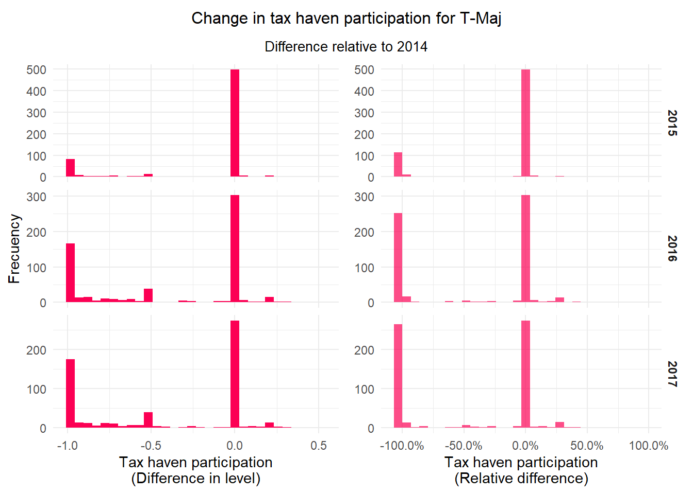
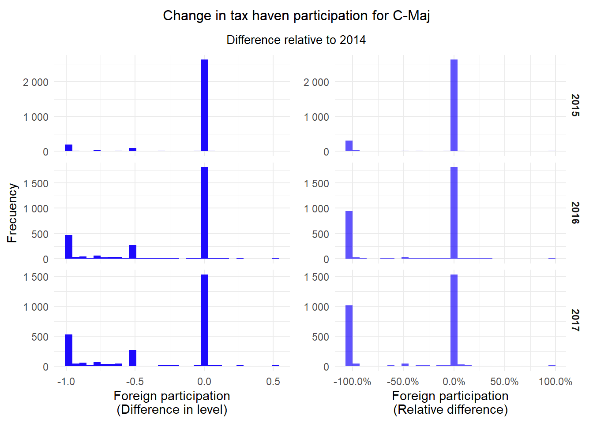
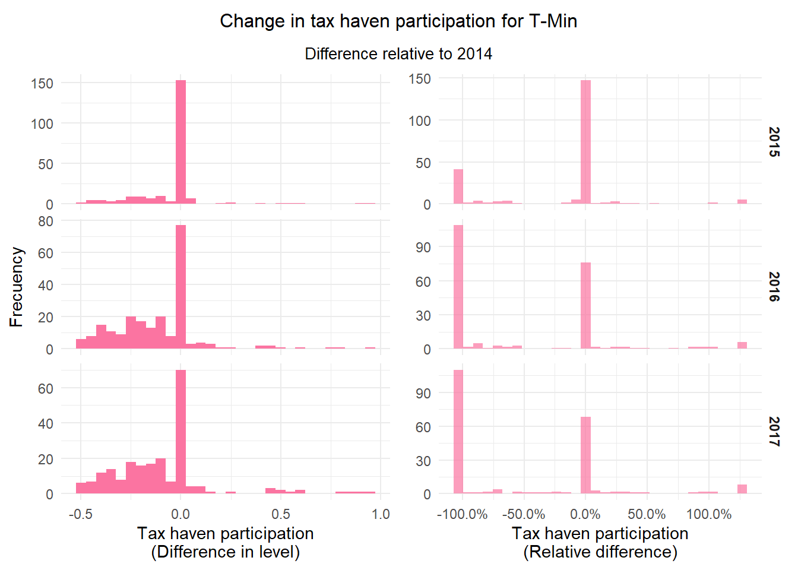
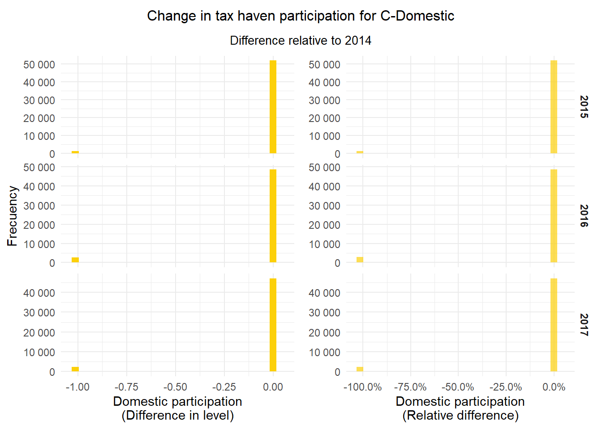
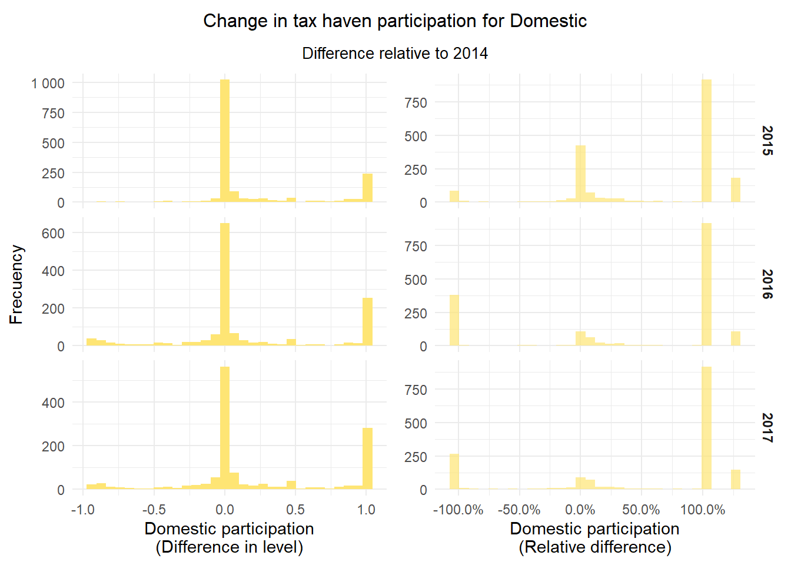
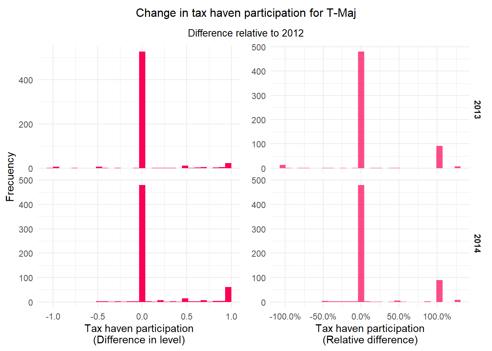

Documento análisis 2023
1 Context and sample construction
1.1 Reading data & libraries

1.2 Step 1: Core sample
Three criteria:
- Active in 2014: Firms that have fille C.I.T
- Positive income in 2014
- Has filled at least once the APS in 2012-2014
Code
# Create the fill status, according to the percents declared in each residence:
tabla <- tabla %>%
mutate(total_percent = porcentaje_aps_ext + porcentaje_aps_pff + porcentaje_aps_nac,
status_fill =
case_when(
total_percent < 100 - epsilon ~ "Incomplete",
total_percent >= 100- epsilon & total_percent <= 100 + epsilon ~ "Complete",
total_percent > 100 + epsilon ~ "Inconsistent",
TRUE ~ "Absent"
))
# Stats of participation fir inconsistent and incomplete APS:
summary_participation <- tabla %>%
filter(status_fill %in% c("Inconsistent","Incomplete")) %>%
group_by(anio_fiscal,status_fill) %>%
summarise(across(.cols = c(total_percent,
porcentaje_aps_ext ,
porcentaje_aps_pff,
porcentaje_aps_nac),
.fns = list(
mean = ~mean(.x,na.rm = T),
min = ~min(.x,na.rm = T),
max = ~max(.x,na.rm = T),
median = ~median(.x,na.rm = T)
),
.names = "{fn}__{.col}"))
# Treat the firms with inconsistent value of participation
inconsistent <- tabla %>%
filter(status_fill == "Inconsistent") %>%
mutate(
factor = 100/total_percent,
across(matches("porcentaje_aps"),~.x*factor)
)
tabla <- tabla %>%
filter(status_fill != "Inconsistent") %>%
bind_rows(inconsistent)
# Core sample:
# 1. Active in 2014 = filled CIT & positive revenues:
active_2014 <- tabla %>%
select(anio_fiscal,
en_f101,
identificacion_informante_anon,
total_income) %>%
filter(anio_fiscal == 2014,
en_f101 == 1,
total_income > 0) %>%
mutate(active_2014 = 1) %>%
select(identificacion_informante_anon,
active_2014)
# 2.Has at leat one APS in 2012-2014:
aps_pre <- tabla %>%
filter(anio_fiscal <= 2014,
dummy_aps_declarado == 1) %>%
distinct(identificacion_informante_anon) %>%
mutate(aps_1214 = 1)
# Joint condition:
core_sample <- aps_pre %>%
inner_join(active_2014)First counts:
| Active firms in 2014: | 73935 |
| Firms with at least one APS in 2012-2014: | 108764 |
| Firms in core sample: | 62350 |
Now we have the number of firms according to their revenues and their declarations of the APS:
Code
# Filter the core sample just for pre period:
core_12_14 <- tabla %>%
filter(anio_fiscal <= 2014) %>%
inner_join(core_sample) %>%
mutate(non_cero_income = as.numeric(total_income > 0),
cero_income = as.numeric(total_income == 0))
# Absent APS: with revenues, with 0 revenues, total
absent_core <- core_12_14 %>%
filter(status_fill == "Absent")
# Yearly summary:
absent_df <- absent_core %>%
group_by(anio_fiscal) %>%
summarise(across(.cols = c(non_cero_income,
cero_income),
.fns = ~sum(.x,na.rm = T))) %>%
mutate(total_no_aps = non_cero_income + cero_income)
# Firms outside the core sample and have no APS annex
out_core <- tabla %>%
inner_join(active_2014) %>%
anti_join(core_12_14 %>% select(anio_fiscal,
identificacion_informante_anon)) %>%
filter(
anio_fiscal <= 2014,
status_fill == "Absent")
# Summary of firms outside the core sample:
absent_comp <- out_core %>%
group_by(anio_fiscal) %>%
summarise(no_aps = n_distinct(identificacion_informante_anon))
# Totals for the complete period 2012-2014:
summary_row <- bind_cols(
# Absent with positive revenue
absent_core %>%
filter(non_cero_income == 1) %>%
summarise(non_cero_income = n_distinct(identificacion_informante_anon)) ,
# Absent with zero revenue
absent_core %>%
filter(cero_income == 1) %>%
summarise(cero_income = n_distinct(identificacion_informante_anon)) ,
# Absent totals
absent_core %>%
summarise(total_no_aps = n_distinct(identificacion_informante_anon)),
# Active firms outside core sample:
out_core %>%
summarise(no_aps = n_distinct(identificacion_informante_anon))
)
# Labels for summary:
summ_row <- summary_row %>%
mutate(stat = "Unique firms",
anio_fiscal = "N (2012-2014)")
# Decorate the yearly table:
absent_count <- absent_df %>%
inner_join(absent_comp) %>%
mutate(
anio_fiscal = as.character(anio_fiscal),
stat = "Pre reform period") %>%
bind_rows(summ_row)1.3 Firms with absent APS
?(caption)
| Positive revenues (In)1 | Zero revenue (In)1 | Total sin APS (In)2 | No APS declared (Out)3 | |
|---|---|---|---|---|
| Pre reform period | ||||
| 2012 | 668 | 452 | 1120 | 9973 |
| 2013 | 750 | 371 | 1121 | 10819 |
| 2014 | 731 | 0 | 731 | 11585 |
| Unique firms | ||||
| N (2012-2014) | 1657 | 755 | 2344 | 11585 |
| 1 This firms does belong to the core sample. The condition says that a firm must fill the APS at least once in the pre period. | ||||
| 2 Sum of the two (In) columns. | ||||
| 3 This firms does notbelong to the core sample, but they were active in 2014. | ||||
Count of firms with no APS declared
Code
# present APS: with revenues, with 0 revenues, total
present_core <- core_12_14 %>%
filter(status_fill != "Absent")
# Core sample by year:
core_df <- core_12_14 %>%
group_by(anio_fiscal) %>%
summarise(core = n_distinct(identificacion_informante_anon))
# Firms with APS annex, join with core yearly summary
present_df <- present_core %>%
group_by(anio_fiscal) %>%
summarise(across(.cols = c(non_cero_income,
cero_income),
.fns = ~sum(.x,na.rm = T))) %>%
mutate(total_aps = non_cero_income + cero_income) %>%
inner_join(absent_df %>%
select(anio_fiscal,total_no_aps)) %>%
inner_join(core_df)
# Global summary for period 2012-2014:
summary_row <- bind_cols(
# APS present, with positive revenues:
present_core %>%
filter(non_cero_income == 1) %>%
summarise(non_cero_income = n_distinct(identificacion_informante_anon)) ,
# APS present, with zero revenues:
present_core %>%
filter(cero_income == 1) %>%
summarise(cero_income = n_distinct(identificacion_informante_anon)) ,
# APS present, with positive revenues:
present_core %>%
summarise(total_aps = n_distinct(identificacion_informante_anon)),
# Firms in core sample with no APS
absent_core %>%
summarise(total_no_aps = n_distinct(identificacion_informante_anon)),
# Firms in core sample:
core_12_14 %>%
summarise(core = n_distinct(identificacion_informante_anon))
)
# Decorate total summary 2012-2014
summ_row <- summary_row %>%
mutate(stat = "Unique firms",
anio_fiscal = "N (2012-2014)")
# Decorate the yearly table:
present_count <- present_df %>%
# inner_join(absent_comp) %>%
mutate(
anio_fiscal = as.character(anio_fiscal),
stat = "Pre reform period") %>%
bind_rows(summ_row)
# Print the table:
present_count %>%
group_by(stat) %>%
gt() %>%
cols_label(anio_fiscal = "",
total_no_aps = "Total sin APS (In)",
non_cero_income = "Positive revenues",
cero_income = "Zero revenue",
total_aps = "Firms with APS",
core = "Core sample") %>%
data_color(columns = "anio_fiscal",
colors = scales::col_factor(
palette = c("darkblue"),
domain = c(2014),
na.color = "white"
)) %>%
tab_footnote(footnote = "This firms does belong to the core sample. ",
locations = cells_column_labels(columns = c("non_cero_income","cero_income"))) %>%
tab_footnote(footnote = "Sum of the firms with cero and positive revenues.",
locations = cells_column_labels(columns = "total_aps")) %>%
tab_footnote(footnote = "Firms in the core sample with no APS at least one year in the pre period.",
locations = cells_column_labels(columns = "total_no_aps")) %>%
tab_footnote(footnote = "Firms in the core sample.",
locations = cells_column_labels(columns = "core")) %>%
tab_header(title = "Firms in the core sample")| Firms in the core sample | |||||
| Positive revenues1 | Zero revenue1 | Firms with APS2 | Total sin APS (In)3 | Core sample4 | |
|---|---|---|---|---|---|
| Pre reform period | |||||
| 2012 | 45291 | 5878 | 51169 | 1120 | 52289 |
| 2013 | 51590 | 5299 | 56889 | 1121 | 58010 |
| 2014 | 61619 | 0 | 61619 | 731 | 62350 |
| Unique firms | |||||
| N (2012-2014) | 62207 | 8882 | 62345 | 2344 | 62350 |
| 1 This firms does belong to the core sample. | |||||
| 2 Sum of the firms with cero and positive revenues. | |||||
| 3 Firms in the core sample with no APS at least one year in the pre period. | |||||
| 4 Firms in the core sample. | |||||
In the previous table, the year 2014 is highlighted in blue because we construct the core sample based in active status for firms in 2014.
We will compare firms that have and does not have APS between the pre and post period (the values show the mean in each period, the counts are considering unique firms across the years of each period):
Code
tabla_deflact <- tabla %>%
# Unir los activos:
inner_join(active_2014) %>%
# Agregar marca sin APS:
mutate(sin_aps = if_else(status_fill == "Absent",1,0)) %>%
# Llevar los valores a precios constantes:
mutate(across(c(total_sales,total_income,tax_liability),
~.x/deflactor))
# Tabla solo para el 2014:
tabla_deflact_14 <- tabla_deflact %>%
filter(anio_fiscal == 2014) %>%
mutate(post = 2)
stats_aps <- tabla_deflact %>%
bind_rows(tabla_deflact_14) %>%
# Agrupamos por post y falta de APS:
group_by(post,sin_aps) %>%
# Resumenes a nivel de variable-periodo:
summarise(n = n_distinct(identificacion_informante_anon),
mean_sales = mean(total_sales,na.rm = T),
sd_sales = sd(total_sales,na.rm = T),
median_sales = median(total_sales,na.rm = T),
mean_income = mean(total_income,na.rm = T),
sd_income = sd(total_income,na.rm = T),
median_income = median(total_income,na.rm = T),
mean_tax_liability = mean(tax_liability,na.rm = T),
sd_tax_liability = sd(tax_liability,na.rm = T),
median_tax_liability = median(tax_liability,na.rm = T)) %>%
# Formato largo:
pivot_longer(cols = c(matches("^mean"),
matches("^median"),
matches("^sd"),
n),
names_to = "variables",
values_to = "valores") %>%
# Algunas modificaciones sobre las variables y factores:
mutate(sin_aps = replace_na(sin_aps,0),
sin_aps = factor(sin_aps,c(0,1),c("APS declared","APS absent")),
post = factor(post,c(2,0,1),c("Year = 2014","Pre reform","Post reform"))) %>%
# Cambio a formato ancho:
pivot_wider(names_from = sin_aps,values_from = valores) %>%
# Últimos cambios sobre las variables:
mutate(variables = factor(variables,levels = c("n",
"mean_sales",
"median_sales",
"sd_sales",
"mean_income",
"median_income",
"sd_income",
"mean_tax_liability",
"median_tax_liability",
"sd_tax_liability"),
labels = c("N",
"Mean sales",
"Median sales",
"SD sales",
"Mean income",
"Median income",
"SD income",
"Mean tax liabilty",
"Median tax liability",
"SD tax liability")),
across(.cols = one_of(c("APS declared","APS absent")),
.fns = ~if_else(variables == "N",
scales::number(.x,accuracy = 1),
scales::dollar(.x,big.mark = " "))))
# Guardar resumen temporal:
write_tsv(stats_aps,"new_stats_group.txt")
# Impresión de la tabla:
stats_aps %>%
group_by(post) %>%
arrange(variables) %>%
gt() %>%
cols_label(variables = "") | APS declared | APS absent | |
|---|---|---|
| Pre reform | ||
| N | 62 345 | 13 929 |
| Mean sales | $1 859 704 | $2 862 861 |
| Median sales | $117 495 | $0 |
| SD sales | $16 402 849 | $153 591 307 |
| Mean income | $1 978 649 | $3 487 995 |
| Median income | $135 804 | $33 894 |
| SD income | $16 952 784 | $155 242 977 |
| Mean tax liabilty | $29 955 | $159 613 |
| Median tax liability | $751 | $0 |
| SD tax liability | $665 586 | $12 055 717 |
| Post reform | ||
| N | 60 147 | 16 653 |
| Mean sales | $1 370 759 | $1 160 713 |
| Median sales | $31 | $0 |
| SD sales | $14 516 805 | $79 021 005 |
| Mean income | $1 888 467 | $2 231 254 |
| Median income | $116 579 | $17 491 |
| SD income | $17 745 435 | $81 714 640 |
| Mean tax liabilty | $29 096 | $42 496 |
| Median tax liability | $460 | $0 |
| SD tax liability | $459 613 | $2 202 586 |
| Year = 2014 | ||
| N | 61 619 | 12 316 |
| Mean sales | $1 813 774 | $2 798 337 |
| Median sales | $118 268 | $472 |
| SD sales | $16 251 460 | $144 318 352 |
| Mean income | $1 928 173 | $3 439 498 |
| Median income | $139 072 | $36 942 |
| SD income | $16 719 193 | $145 530 336 |
| Mean tax liabilty | $29 279 | $128 475 |
| Median tax liability | $856 | $0 |
| SD tax liability | $624 151 | $9 138 910 |
1.4 Counts according to APS fill status
The APS fill status follows the following rules:
- Complete APS is considered under the condition \(\text{% declared}_{t} \in [100 - \epsilon, 100 + \epsilon ]\)
- Incomplete APS is considered under the condition \(\text{% declared}_{t} \in [ \epsilon, 100 - \epsilon[\)
- Inconsistent APS is considered under the condition \(\text{% declared}_{t} \in [100 + \epsilon, \inf[\)
We take the values of \(\epsilon = 0.005\)
Code
# APS fill status:
tabla_status <- tabla %>%
inner_join(core_sample) %>%
select(anio_fiscal,total_income,tasa_ir,status_fill,identificacion_informante_anon,total_percent)
# yearly summary
yearly_status <- tabla_status %>%
group_by(anio_fiscal,status_fill) %>%
summarise(firms = n_distinct(identificacion_informante_anon)) %>%
ungroup() %>%
group_by(anio_fiscal) %>%
mutate(Total = sum(firms,na.rm = T),
porcentaje = firms/Total) %>%
pivot_wider(id_cols = c(anio_fiscal,Total),
names_from = status_fill,
values_from = c(firms,porcentaje)) %>%
mutate(across(matches("porcentaje"),percent,accuracy = 0.001))
# yearly summary
global_status <- tabla_status %>%
group_by(status_fill) %>%
summarise(firms = n_distinct(identificacion_informante_anon)) %>%
pivot_wider(names_from = status_fill,
values_from = firms) %>%
bind_cols(tabla_status %>%
summarise(Total = n_distinct(identificacion_informante_anon))) %>%
mutate(stat = "Unique firms (All period)") %>%
rename_with(.cols = -c(Total,stat),.fn = ~str_c("firms_",.x))
status_count <- yearly_status %>%
mutate(stat = if_else(anio_fiscal > 2014,"Post-period","Pre-period"),
stat = factor(stat,levels = c("Pre-period","Post-period"))) %>%
bind_rows(global_status)
status_count %>%
rename_with(.cols = matches("firms"), ~ str_remove(.x,"firms_")) %>%
group_by(stat) %>%
gt() %>%
cols_label(anio_fiscal = "") %>%
data_color(columns = "anio_fiscal",
colors = scales::col_factor(
palette = c("darkblue"),
domain = c(2014),
na.color = "white"
)) %>%
gt::cols_merge_n_pct(col_n = Absent,
col_pct = porcentaje_Absent) %>%
gt::cols_merge_n_pct(col_n = Complete,
col_pct = porcentaje_Complete)%>%
gt::cols_merge_n_pct(col_n = Incomplete,
col_pct = porcentaje_Incomplete)%>%
gt::cols_merge_n_pct(col_n = Inconsistent,
col_pct = porcentaje_Inconsistent) | Total | Absent | Complete | Incomplete | Inconsistent | |
|---|---|---|---|---|---|
| Pre-period | |||||
| 2012 | 52289 | 1120 (2.142%) | 48963 (93.639%) | 2124 (4.062%) | 82 (0.157%) |
| 2013 | 58010 | 1121 (1.932%) | 54773 (94.420%) | 2008 (3.461%) | 108 (0.186%) |
| 2014 | 62350 | 731 (1.172%) | 59846 (95.984%) | 1623 (2.603%) | 150 (0.241%) |
| Post-period | |||||
| 2015 | 60957 | 1864 (3.058%) | 57622 (94.529%) | 1321 (2.167%) | 150 (0.246%) |
| 2016 | 58418 | 3509 (6.007%) | 54488 (93.273%) | 372 (0.637%) | 49 (0.084%) |
| 2017 | 56160 | 2746 (4.890%) | 52926 (94.241%) | 434 (0.773%) | 54 (0.096%) |
| Unique firms (All period) | |||||
| NA | 62350 | 7738 | 61569 | 3451 | 373 |
1.5 Participation of incomplete APS fills
Code
summary_participation %>%
filter(status_fill == "Incomplete") %>%
ungroup() %>%
pivot_longer(-c(anio_fiscal,status_fill)) %>%
separate(name,sep = "__",into = c("stat","var")) %>%
pivot_wider(names_from = var,values_from = value) %>%
group_by(anio_fiscal) %>%
mutate(stat = str_to_title(stat)) %>%
gt() %>%
cols_hide(status_fill) %>%
cols_label(
stat = "",
anio_fiscal = "",
total_percent = md("**Total percent declared**"),
porcentaje_aps_ext = md("**Percent in foreign countries**"),
porcentaje_aps_pff = md("**Percent in foreign tax havens**"),
porcentaje_aps_nac = md("**Domestic percent**")
)| Total percent declared | Percent in foreign countries | Percent in foreign tax havens | Domestic percent | |
|---|---|---|---|---|
| 2012 | ||||
| Mean | 48.16389 | 3.432908 | 0.8446755 | 43.88631 |
| Min | 0.00000 | 0.000000 | 0.0000000 | 0.00000 |
| Max | 99.99478 | 99.993400 | 99.9900000 | 99.99478 |
| Median | 50.00000 | 0.000000 | 0.0000000 | 40.00000 |
| 2013 | ||||
| Mean | 48.52456 | 3.314186 | 1.0673695 | 44.14300 |
| Min | 0.00000 | 0.000000 | 0.0000000 | 0.00000 |
| Max | 99.99478 | 99.993400 | 99.9600040 | 99.99478 |
| Median | 50.00000 | 0.000000 | 0.0000000 | 41.23000 |
| 2014 | ||||
| Mean | 46.09950 | 3.323767 | 0.8016775 | 41.97406 |
| Min | 0.00000 | 0.000000 | 0.0000000 | 0.00000 |
| Max | 99.99478 | 99.993000 | 99.9600040 | 99.99478 |
| Median | 50.00000 | 0.000000 | 0.0000000 | 31.13750 |
| 2015 | ||||
| Mean | 47.34456 | 3.494789 | 0.7396873 | 43.11008 |
| Min | 0.00000 | 0.000000 | 0.0000000 | 0.00000 |
| Max | 99.99478 | 99.993000 | 99.9911940 | 99.99478 |
| Median | 50.00000 | 0.000000 | 0.0000000 | 30.60960 |
| 2016 | ||||
| Mean | 49.64835 | 7.088095 | 0.9540360 | 41.60622 |
| Min | 0.00000 | 0.000000 | 0.0000000 | 0.00000 |
| Max | 99.99400 | 99.990100 | 86.5400000 | 99.99400 |
| Median | 50.00000 | 0.000000 | 0.0000000 | 32.00000 |
| 2017 | ||||
| Mean | 48.24167 | 5.688951 | 0.8142786 | 41.73844 |
| Min | 0.00000 | 0.000000 | 0.0000000 | 0.00000 |
| Max | 99.99400 | 99.990000 | 99.9900000 | 99.99400 |
| Median | 50.00000 | 0.000000 | 0.0000000 | 33.77000 |
1.6 Distributions of log(sales), log(revenues), log(profits), log(tax liability) between firms with or without APS annex declared
Code
# For year = 2014: calculate the log sales:
# Add some factors:
dist_df <-
tabla_deflact_14 %>%
mutate(sin_aps = replace_na(sin_aps,0),
sin_aps = factor(sin_aps,c(0,1),c("APS declared","APS absent")),
post = factor(post,c(2,0,1),c("Year = 2014","Pre reform","Post reform")),
positive_sales = if_else(total_sales == 0, NA_real_,1),
log_sales = log(total_sales*positive_sales),
positive_revenues = if_else(total_income == 0, NA_real_,1),
log_revenues = log(total_income*positive_revenues),
positive_profits = if_else(net_profits == 0, NA_real_,1),
log_profits = log(net_profits*positive_profits),
positive_tl = if_else(tax_liability == 0, NA_real_,1),
log_tl = log(tax_liability*positive_tl),
)
second <- dist_df %>%
filter(status_fill %in% c("Complete","Incomplete"))
# Statistics of groups:
stat_df <- dist_df %>%
group_by(sin_aps) %>%
summarise(
firms = n_distinct(identificacion_informante_anon),
positive__sales = sum(positive_sales,na.rm = T),
mean__sales = mean(log_sales,na.rm = T),
mean_t__sales = mean(total_sales),
positive__revenue = sum(positive_revenues,na.rm = T),
mean__revenue = mean(log_revenues,na.rm = T),
mean_t__revenue = mean(total_income),
positive__profits = sum(positive_profits,na.rm = T),
mean__profits = mean(log_profits,na.rm = T),
mean_t__profits = mean(net_profits),
positive__tl = sum(positive_tl,na.rm = T),
mean__tl = mean(log_tl,na.rm = T),
mean_t__tl = mean(tax_liability))
stat_df2 <- second %>%
group_by(status_fill) %>%
summarise(
firms = n_distinct(identificacion_informante_anon),
positive__sales = sum(positive_sales,na.rm = T),
mean__sales = mean(log_sales,na.rm = T),
mean_t__sales = mean(total_sales),
positive__revenue = sum(positive_revenues,na.rm = T),
mean__revenue = mean(log_revenues,na.rm = T),
mean_t__revenue = mean(total_income),
positive__profits = sum(positive_profits,na.rm = T),
mean__profits = mean(log_profits,na.rm = T),
mean_t__profits = mean(net_profits),
positive__tl = sum(positive_tl,na.rm = T),
mean__tl = mean(log_tl,na.rm = T),
mean_t__tl = mean(tax_liability))
stat_df <- stat_df %>%
pivot_longer(-c(sin_aps,firms)) %>%
separate(name,sep = "__",c("stat","var")) %>%
pivot_wider(names_from = stat,values_from = value) %>%
mutate(var = factor(var,c("sales","revenue","profits","tl"),
c("Total sales","Revenues","Net profits","Tax liability")))
stat_df2 <- stat_df2 %>%
pivot_longer(-c(status_fill,firms)) %>%
separate(name,sep = "__",c("stat","var")) %>%
pivot_wider(names_from = stat,values_from = value) %>%
mutate(var = factor(var,c("sales","revenue","profits","tl"),
c("Total sales","Revenues","Net profits","Tax liability")))
line_df <- stat_df %>%
select(name = var,mean,sin_aps) %>%
bind_rows(stat_df2 %>%
select(name = var,mean,sin_aps = status_fill))
# Plot of the distributions:
dist_df %>%
bind_rows(second %>% select(-sin_aps) %>% rename(sin_aps = status_fill)) %>%
select(sin_aps,
log_sales,
log_revenues,
log_profits,
log_tl) %>%
pivot_longer(-sin_aps) %>%
mutate(name = factor(name,c("log_sales","log_revenues","log_profits","log_tl"),
c("Total sales","Revenues","Net profits","Tax liability"))) %>%
ggplot() +
geom_histogram(aes(x = value,fill = name,alpha = sin_aps)) +
geom_vline(data = line_df,aes(xintercept = mean)) +
facet_grid(sin_aps ~ name,scales = "free") +
scale_y_continuous(labels = ~number(.x,accuracy = 1)) +
scale_alpha_manual(values = c(1,0.8,0.6,0.4))+
theme_minimal() +
labs(title = "Comparative distributions between firms with and without APS annex",
subtitle = "Only positive values in 2014",
caption = "The scale of Y axis is adjusted to improve readability. The vertical line shows the mean of each distribution. In the following table there's a summary to complement this graphic.") +
theme(legend.position = "none") 
Statistics to understand the both distribution:
Code
stat_df %>%
mutate(firms = number(firms,big.mark = " ",accuracy = 1),
positive = number(positive,big.mark = " ",accuracy = 1),
mean = number(mean, big.mark = " ",accuracy = 0.001,decimal.mark = "."),
mean_t = dollar(mean_t/1e6, big.mark = " ",accuracy = 0.01,decimal.mark = ".")) %>%
pivot_longer(-c(var,sin_aps)) %>%
pivot_wider(names_from = var,values_from = value) %>%
mutate(name = factor(name,
c("firms","positive","mean","mean_t"),
c("N (Firms)","Firms with positive sales","Mean log(Sales)","Mean sales USD"))) %>%
group_by(sin_aps) %>%
gt() %>%
cols_label(name = "")| Total sales | Revenues | Net profits | Tax liability | |
|---|---|---|---|---|
| APS declared | ||||
| N (Firms) | 61 619 | 61 619 | 61 619 | 61 619 |
| Firms with positive sales | 55 433 | 61 619 | 48 089 | 47 659 |
| Mean log(Sales) | 11.820 | 11.608 | 8.964 | 7.471 |
| Mean sales USD | $1.81 | $1.93 | $0.15 | $0.03 |
| APS absent | ||||
| N (Firms) | 12 316 | 12 316 | 12 316 | 12 316 |
| Firms with positive sales | 6 675 | 12 316 | 6 242 | 3 096 |
| Mean log(Sales) | 10.414 | 10.229 | 8.048 | 5.648 |
| Mean sales USD | $2.80 | $3.44 | $0.72 | $0.13 |
1.7 Step 2: groups within core sample
1.7.1 Classification of firms according to the residence of their ownership
- Effective participation in tax havens >= 50 ~ T-Maj,
- Effective participation in tax havens > 5 & Effective participation in tax havens < 50 ~ T-Min,
- Effective participation abroad >= 50 & Effective participation in tax havens < 5 ~ C-Maj,
- Effective participation abroad > 5 & Effective participation abroad < 50 & Effective participation in tax havens < 5 ~ C-Min,
- Effective domestic participation > 95 & Effective participation in tax havens < 5 ~ C-Domestic,
- In any other case ~ Domestic
1.7.2 Number of firms in each assign group
Code
tabla <- tabla %>%
mutate(across(c(porcentaje_aps_pff,porcentaje_aps_ext,porcentaje_aps_nac),
~if_else(.x > 100,100,.x)))
# Asignación de grupo de acuerdo al año 2014:
assign_2014 <- tabla %>%
inner_join(core_sample) %>%
filter(anio_fiscal == 2014) %>%
mutate(
group_assign = case_when(
porcentaje_aps_pff >= 49.9995 ~ "T-Maj",
porcentaje_aps_pff > 5.0005 & porcentaje_aps_pff < 49.9995 ~ "T-Min",
porcentaje_aps_ext >= 49.9995 & porcentaje_aps_pff < 4.9995 ~ "C-Maj",
porcentaje_aps_ext > 5.0005 & porcentaje_aps_ext < 49.9995 & porcentaje_aps_pff < 4.9995 ~ "C-Min",
porcentaje_aps_nac > 95.0005 & porcentaje_aps_pff < 4.9995 ~ "C-Domestic",
TRUE ~ "Domestic"
)) %>%
select(identificacion_informante_anon,group_assign)
# Unión de la asignación, la core y la core sample:
tabla_core <- tabla %>%
inner_join(core_sample) %>%
left_join(assign_2014)
summ_group <- tabla_core %>%
filter(anio_fiscal == 2014) %>%
group_by(anio_fiscal,
group_assign) %>%
summarise(mean_pnac = mean(porcentaje_aps_nac, na.rm = T),
min_pnac = min(porcentaje_aps_nac, na.rm = T),
max_pnac = max(porcentaje_aps_nac, na.rm = T),
mean_pext = mean(porcentaje_aps_ext, na.rm = T),
min_pext = min(porcentaje_aps_ext, na.rm = T),
max_pext = max(porcentaje_aps_ext, na.rm = T),
mean_ppff = mean(porcentaje_aps_pff, na.rm = T),
min_ppff = min(porcentaje_aps_pff, na.rm = T),
max_ppff = max(porcentaje_aps_pff, na.rm = T),
n = n_distinct(identificacion_informante_anon)) %>%
pivot_longer(cols = -c(anio_fiscal,group_assign),
values_to = "value",
names_to = "stat") %>%
separate(stat,into = c("var","prop")) %>%
pivot_wider(names_from = group_assign,values_from = value) %>%
mutate(
prop = factor(prop,c("pnac","pext","ppff"),
c("Domestic partiticpation",
"Foreign participation",
"Tax haven partiicpation")))
write_tsv(summ_group,"new_count_group.txt")Considering the 62350 firms in 2014:
Code
fila_1 <- summ_group %>%
ungroup() %>%
select(-anio_fiscal) %>%
mutate(label = "Firms in core sample (2014)") %>%
filter(var == "n") %>%
select(-var,-prop) %>%
mutate(across(.cols = 1:6,
.fns = number,accruracy = 1))
fila_2 <- summ_group %>%
ungroup() %>%
select(-anio_fiscal) %>%
mutate(label = "Proportions (2014)") %>%
filter(var == "n") %>%
select(-var,-prop) %>%
mutate(across(.cols = 1:6,
.fns = ~percent(.x/nrow(core_sample),accuracy = 0.01)))
weigthed <- tabla_core %>%
filter(anio_fiscal == 2014) %>%
group_by(anio_fiscal,
group_assign) %>%
summarise(sum_sales = sum(total_sales,na.rm = T),
sum_assets = sum(total_assets,na.rm = T)) %>%
ungroup() %>%
mutate(across(matches("sum_"),~.x/sum(.x)),
across(matches("sum_"),percent,accuracy = 0.01)) %>%
select(-anio_fiscal) %>%
pivot_longer(-group_assign) %>%
pivot_wider(names_from = group_assign,values_from = value) %>%
rename(label = name ) %>%
mutate(label = if_else(label == "sum_sales",
"Sales weighted proportion",
"Assets weighted proportion"))
bind_rows(fila_1,fila_2,weigthed )%>%
select(label,everything()) %>%
ungroup() %>%
gt() %>%
data_color(columns = 1,
colors = scales::col_factor(
palette = c("darkblue"),
domain = c(2014)
)) %>%
cols_label(
label = "",
`C-Domestic` = md("**C-Domestic**"),
`C-Maj` = md("**C-Maj**"),
`C-Min`= md("**C-Min**"),
`Domestic` = md("**Domestic**"),
`T-Maj` = md("**T-Maj**"),
`T-Min` = md("**T-Min**")
)| C-Domestic | C-Maj | C-Min | Domestic | T-Maj | T-Min | |
|---|---|---|---|---|---|---|
| Firms in core sample (2014) | 55 114 | 3 249 | 1 144 | 1 951 | 662 | 230 |
| Proportions (2014) | 88.39% | 5.21% | 1.83% | 3.13% | 1.06% | 0.37% |
| Sales weighted proportion | 60.57% | 19.93% | 6.68% | 6.50% | 3.21% | 3.11% |
| Assets weighted proportion | 55.49% | 18.62% | 6.78% | 8.80% | 3.52% | 6.78% |
1.7.3 Plots of effective participation in tax haven and in foreign residence (non tax haven)
Code
part_df <- tabla_core %>%
mutate(across(c(porcentaje_aps_pff,
porcentaje_aps_ext),
~.x/100)) %>%
group_by(anio_fiscal) %>%
summarise(
pff_mean = mean(porcentaje_aps_pff,
na.rm = T),
ext_mean = mean(porcentaje_aps_ext,
na.rm = T),
pff_wmean = weighted.mean(porcentaje_aps_pff,
w = total_assets,
na.rm = T),
ext_wmean = weighted.mean(porcentaje_aps_ext,
w = total_assets,
na.rm = T),
n = n()
)
part_1 <- part_df %>%
ggplot(aes(x = anio_fiscal)) +
geom_line(aes(y = pff_mean,
color = "Tax haven p.")) +
geom_line(aes(y = ext_mean/5,
color = "Foreign p."
)) +
geom_point(aes(y = pff_mean,
color = "Tax haven p.")) +
geom_point(aes(y = ext_mean/5,
color = "Foreign p.")) +
scale_y_continuous(
name = "Tax haven participation",
sec.axis = sec_axis(~.*5,
name = "Foreign participation",
label = percent),
label = percent
) +
scale_color_manual(values = c("#1687cc",
"#F00D0D")) +
theme_minimal() +
theme(
legend.position = "bottom",
axis.title.x = element_blank()
) +
labs(
color = "Effective participation")
# "Mean effective participation in foreign residences",
# subtitle = ,
part_2 <- part_df %>%
ggplot(aes(x = anio_fiscal)) +
geom_line(aes(y = pff_wmean,
color = "Tax haven p.")) +
geom_line(aes(y = ext_wmean/5,
color = "Foreign p."
)) +
geom_point(aes(y = pff_wmean,
color = "Tax haven p.")) +
geom_point(aes(y = ext_wmean/5,
color = "Foreign p.")) +
scale_y_continuous(
name = "Tax haven participation",
sec.axis = sec_axis(~.*5,
name = "Foreign participation",
label = percent),
label = percent
) +
scale_color_manual(values = c("#056aa8",
"#A80505")) +
theme_minimal() +
theme(
legend.position = "bottom",
axis.title.x = element_blank()
) +
labs(color = "Assets weighted p.")
title <- ggdraw() +
draw_text("Mean effective participation in foreign residences")
subtitle <- ggdraw() +
draw_text("Tax haven and foreign (non tax haven) participtation")
central <- plot_grid(part_1,part_2,ncol = 2)
plot_grid(title, subtitle,central,nrow = 3,rel_heights = c(1,1,10))
1.7.4 Effective participation in the different residence
Code
summ_group %>%
filter(anio_fiscal == 2014,
var != "n") %>%
mutate(var = factor(var,c("mean","max","min"),c("Mean","Max","Min"))) %>%
group_by(prop) %>%
gt() %>%
data_color(columns = 1,
colors = scales::col_factor(
palette = c("darkblue"),
domain = c(2014)
)) %>%
cols_label(
anio_fiscal = "",
var = "",
`C-Domestic` = md("**C-Domestic**"),
`C-Maj` = md("**C-Maj**"),
`C-Min`= md("**C-Min**"),
`Domestic` = md("**Domestic**"),
`T-Maj` = md("**T-Maj**"),
`T-Min` = md("**T-Min**")
) %>%
fmt_number(columns = 3:9,decimals = 3)| C-Domestic | C-Maj | C-Min | Domestic | T-Maj | T-Min | ||
|---|---|---|---|---|---|---|---|
| Domestic partiticpation | |||||||
| 2014 | Mean | 99.982 | 12.663 | 72.703 | 31.933 | 7.414 | 45.979 |
| 2014 | Min | 95.001 | 0.000 | 0.000 | 0.000 | 0.000 | 0.000 |
| 2014 | Max | 100.000 | 50.000 | 94.931 | 95.000 | 50.000 | 94.230 |
| Foreign participation | |||||||
| 2014 | Mean | 0.010 | 86.949 | 25.275 | 0.276 | 2.854 | 23.430 |
| 2014 | Min | 0.000 | 50.000 | 5.069 | 0.000 | 0.000 | 0.000 |
| 2014 | Max | 4.870 | 100.000 | 49.997 | 46.250 | 50.000 | 94.680 |
| Tax haven partiicpation | |||||||
| 2014 | Mean | 0.001 | 0.016 | 0.035 | 0.032 | 89.436 | 26.665 |
| 2014 | Min | 0.000 | 0.000 | 0.000 | 0.000 | 50.000 | 5.024 |
| 2014 | Max | 4.295 | 4.990 | 4.500 | 5.000 | 100.000 | 49.996 |
1.7.5 Stats for the core sample clasified:
Code
sum_stats <- tabla_core %>%
filter(anio_fiscal == 2014) %>%
mutate(across(c(total_income,
net_profits,
total_assets,
net_profit_margin,
total_sales),
~replace_na(.x,0)),
across(c(total_income,
net_profits,
total_assets,
net_profit_margin,
total_sales),
~.x/deflactor),
across(c(net_profits,total_sales),
~ winsorize(.x, method = "percentile",threshold = 0.05),.names = "{.col}_w"),
net_profit_margin_w = net_profits_w/total_sales_w,
net_profit_margin_w = case_when(net_profit_margin_w > 1 | is.infinite(net_profit_margin_w) ~ 1,
is.nan(net_profit_margin_w) ~ 0,
TRUE ~ net_profit_margin_w),
positive_prof = net_profits > 0
) %>%
group_by(group_assign) %>%
summarise(mean__rev = mean(total_income, na.rm = T),
median__rev = median(total_income, na.rm = T),
sd__rev = sd(total_income, na.rm = T),
mean__log_rev = mean(log(total_income + 1), na.rm = T),
median__log_rev = median(log(total_income + 1), na.rm = T),
sd__log_rev = sd(log(total_income + 1), na.rm = T),
mean__prof = mean(net_profits, na.rm = T),
median__prof = median(net_profits, na.rm = T),
sd__prof = sd(net_profits, na.rm = T),
mean__profmagin = mean(net_profit_margin_w, na.rm = T),
median__profmagin = median(net_profit_margin_w, na.rm = T),
sd__profmagin = sd(net_profit_margin_w, na.rm = T),
mean__assets = mean(log(total_assets + 1), na.rm = T),
median__assets = median(log(total_assets + 1), na.rm = T),
sd__assets = sd(log(total_assets + 1), na.rm = T),
n__positive = sum(positive_prof,na.rm = T))
sum_stats <- sum_stats %>%
pivot_longer(cols = -group_assign,
values_to = "value",
names_to = "stat") %>%
separate(stat,into = c("var","prop"),sep = "__") %>%
pivot_wider(names_from = group_assign,values_from = value) %>%
mutate( var = factor(var,c("mean","median","sd"),c("Mean","P50","SD")),
prop = factor(prop,c("rev","log_rev","prof","profmagin","assets","positive"),
c("Revenues",
"log(Revenues)",
"Net profits",
"Net profit margin",
"log(Assets)",
"N (positive profits)")))
write_tsv(sum_stats,"aggregated_summary.txt")
sum_stats %>%
filter(prop != "N (positive profits)") %>%
mutate(across(3:8,~if_else(str_detect(prop,"log|margin"),.x,.x/1e6))) %>%
group_by(prop) %>%
gt() %>%
cols_label(
var = "Statistic",
`C-Domestic` = md("**C-Domestic**"),
`C-Maj` = md("**C-Maj**"),
`C-Min`= md("**C-Min**"),
`Domestic` = md("**Domestic**"),
`T-Maj` = md("**T-Maj**"),
`T-Min` = md("**T-Min**")
) %>%
fmt_number(columns = 3:8,decimals = 3,dec_mark = ".",sep_mark = " ") %>%
tab_footnote(footnote = "For the values of revenues and net profits the shown values are divided by 1 millon USD.",locations = cells_column_labels(columns = "var"))| Statistic1 | C-Domestic | C-Maj | C-Min | Domestic | T-Maj | T-Min |
|---|---|---|---|---|---|---|
| Revenues | ||||||
| Mean | 1.322 | 7.329 | 7.099 | 4.070 | 5.759 | 16.357 |
| P50 | 0.129 | 0.369 | 0.360 | 0.073 | 0.299 | 0.873 |
| SD | 11.734 | 39.475 | 39.225 | 26.431 | 22.129 | 77.700 |
| log(Revenues) | ||||||
| Mean | 11.510 | 12.580 | 12.694 | 11.283 | 12.522 | 13.433 |
| P50 | 11.769 | 12.818 | 12.795 | 11.204 | 12.607 | 13.679 |
| SD | 2.595 | 2.987 | 2.841 | 3.079 | 3.107 | 3.202 |
| Net profits | ||||||
| Mean | 0.098 | 0.640 | 0.664 | 0.340 | 0.518 | 1.357 |
| P50 | 0.004 | 0.009 | 0.011 | 0.001 | 0.009 | 0.038 |
| SD | 2.528 | 4.714 | 4.161 | 2.324 | 2.813 | 5.267 |
| Net profit margin | ||||||
| Mean | 0.144 | 0.127 | 0.128 | 0.260 | 0.170 | 0.163 |
| P50 | 0.041 | 0.045 | 0.046 | 0.041 | 0.046 | 0.063 |
| SD | 0.273 | 0.246 | 0.249 | 0.402 | 0.296 | 0.294 |
| log(Assets) | ||||||
| Mean | 11.233 | 12.704 | 12.827 | 11.167 | 13.574 | 13.960 |
| P50 | 11.505 | 12.860 | 12.899 | 11.756 | 13.771 | 13.915 |
| SD | 2.698 | 2.731 | 2.817 | 4.218 | 2.522 | 2.834 |
| 1 For the values of revenues and net profits the shown values are divided by 1 millon USD. | ||||||
1.7.6 Firms with positive profits:
Code
summ_group %>%
ungroup() %>%
select(-anio_fiscal) %>%
# mutate(label = "Firms in core sample (2014)") %>%
filter(var == "n") %>%
select(-var,-prop) %>%
pivot_longer(
cols = everything(),
values_to = "Firms in core sample",
names_to = "group") %>%
inner_join(
sum_stats %>%
filter(prop == "N (positive profits)") %>%
pivot_longer(3:8) %>%
select(-var,`N (positive profits)` = value,-prop,group = name)) %>%
mutate(
`Share (positive profits)` = percent( `N (positive profits)`/`Firms in core sample`),
`Firms in core sample` = number(`Firms in core sample`,
big.mark = " "),
`N (positive profits)` = number(`N (positive profits)`,
big.mark = " ")
) %>%
pivot_longer(cols = 2:4) %>%
pivot_wider(names_from = group,values_from = value) %>%
rowwise() %>%
mutate(Total = sum(across(2:7,~as.numeric(str_remove(.x," "))),na.rm = T)) %>%
gt() %>%
cols_label(
name = "",
`C-Domestic` = md("**C-Domestic**"),
`C-Maj` = md("**C-Maj**"),
`C-Min`= md("**C-Min**"),
`Domestic` = md("**Domestic**"),
`T-Maj` = md("**T-Maj**"),
`T-Min` = md("**T-Min**")
) %>%
gt::tab_footnote(footnote = "The share is calculated respect of the core sample values shown in 'Number of firms in each assign group' section.",locations = cells_body(columns = 1,rows = 3))| C-Domestic | C-Maj | C-Min | Domestic | T-Maj | T-Min | Total | |
|---|---|---|---|---|---|---|---|
| Firms in core sample | 55 114 | 3 249 | 1 144 | 1 951 | 662 | 230 | 62350 |
| N (positive profits) | 43 280 | 2 378 | 856 | 1 348 | 487 | 185 | 48534 |
| Share (positive profits)1 | 78.53% | 73.19% | 74.83% | 69.09% | 73.56% | 80.43% | 0 |
| 1 The share is calculated respect of the core sample values shown in 'Number of firms in each assign group' section. | |||||||
1.8 Step 3:
1.8.1 Active firm definition:
Filled CIT with non zero revenue
1.8.2 Count: By year
Code
tabla_core <- tabla_core %>%
mutate(
across(c(total_income,
net_profits,
total_assets,
net_profit_margin,
total_sales,
en_f101,
dummy_aps_declarado),
~replace_na(.x,0)),
across(c(total_income,
net_profits,
total_assets,
net_profit_margin,
total_sales),
~.x/deflactor),
positive_revenues = total_income > 0,
fill = positive_revenues & en_f101 == 1 & dummy_aps_declarado == 1,
poitive_cit = positive_revenues & tasa_ir > 0)
conteos_3 <- tabla_core %>%
group_by(anio_fiscal,group_assign) %>%
summarise(
`Active (Non-zero revenue)` = sum(positive_revenues,na.rm = T),
`Count filled CIT + APS` = sum(fill,na.rm = T),
`CIT > 0` = sum(poitive_cit,na.rm = T)
)
write_tsv(conteos_3,"count_active_firms.txt")
conteos_3 %>%
pivot_longer(-c(anio_fiscal,group_assign)) %>%
pivot_wider(names_from = group_assign,values_from = value) %>%
group_by(name) %>%
rowwise() %>%
mutate(Total = sum(across(2:7))) %>%
gt() %>%
cols_label(
anio_fiscal = "",
`C-Domestic` = md("**C-Domestic**"),
`C-Maj` = md("**C-Maj**"),
`C-Min`= md("**C-Min**"),
`Domestic` = md("**Domestic**"),
`T-Maj` = md("**T-Maj**"),
`T-Min` = md("**T-Min**")
) | C-Domestic | C-Maj | C-Min | Domestic | T-Maj | T-Min | Total | |
|---|---|---|---|---|---|---|---|
| Active (Non-zero revenue) | |||||||
| 2012 | 40344 | 2423 | 929 | 1540 | 527 | 196 | 45959 |
| 2013 | 46117 | 2761 | 999 | 1701 | 554 | 208 | 52340 |
| 2014 | 55114 | 3249 | 1144 | 1951 | 662 | 230 | 62350 |
| 2015 | 48223 | 2842 | 1040 | 1517 | 586 | 214 | 54422 |
| 2016 | 43606 | 2627 | 957 | 1187 | 552 | 212 | 49141 |
| 2017 | 40842 | 2426 | 884 | 1108 | 516 | 202 | 45978 |
| Count filled CIT + APS | |||||||
| 2012 | 39808 | 2402 | 922 | 1445 | 526 | 188 | 45291 |
| 2013 | 45623 | 2743 | 997 | 1470 | 552 | 205 | 51590 |
| 2014 | 55114 | 3249 | 1144 | 1220 | 662 | 230 | 61619 |
| 2015 | 47589 | 2803 | 1029 | 1232 | 581 | 212 | 53446 |
| 2016 | 42367 | 2584 | 942 | 749 | 544 | 209 | 47395 |
| 2017 | 40153 | 2414 | 877 | 814 | 510 | 199 | 44967 |
| CIT > 0 | |||||||
| 2012 | 31047 | 1860 | 722 | 985 | 384 | 158 | 35156 |
| 2013 | 35556 | 2106 | 769 | 1051 | 404 | 163 | 40049 |
| 2014 | 42952 | 2420 | 859 | 1150 | 487 | 184 | 48052 |
| 2015 | 37274 | 2141 | 779 | 951 | 419 | 166 | 41730 |
| 2016 | 33375 | 1895 | 678 | 773 | 376 | 152 | 37249 |
| 2017 | 32531 | 1854 | 686 | 749 | 380 | 147 | 36347 |
Revenue growth:
- The base year is 2014
- We take the first year in post period
- And calculate if the total revenue in the first year of the post period is greater than the revenues in 2014
Code
tabla_core_p <- tabla_core %>%
select(anio_fiscal,
identificacion_informante_anon,
porcentaje_aps_ext,
porcentaje_aps_pff,
porcentaje_aps_nac,
group_assign,
total_income) %>%
mutate(
across(c(porcentaje_aps_ext,porcentaje_aps_pff,porcentaje_aps_nac),
~replace_na(.x,0)),
total_percent = porcentaje_aps_ext + porcentaje_aps_pff + porcentaje_aps_nac) %>%
group_by(identificacion_informante_anon) %>%
mutate(primera = min(anio_fiscal)) %>%
arrange(identificacion_informante_anon,anio_fiscal) %>%
ungroup()
write_rds(tabla_core_p,"tabla_core_sample_porcentage.rds",compress = "gz")
aps_core_2014 <- tabla_core_p %>%
filter(anio_fiscal == 2014)
ids_core <- aps_core_2014 %>%
select(identificacion_informante_anon)
primera_post <- tabla_core_p %>%
ungroup() %>%
filter(anio_fiscal >= 2015) %>%
inner_join(ids_core) %>%
mutate(indicador = 2018 - anio_fiscal) %>%
group_by(identificacion_informante_anon) %>%
top_n(n = 1,wt = indicador) %>%
ungroup()
primera_post <- primera_post %>%
rename_with(.cols = -identificacion_informante_anon,
~str_c(.x,"_post"))
aps_core_2014 <- aps_core_2014 %>%
rename_with(.cols = -identificacion_informante_anon,
~str_c(.x,"_2014"))
compar <- aps_core_2014 %>%
left_join(primera_post)
compar %>%
mutate(revenue_growth = as.numeric(total_income_post > total_income_2014)) %>%
group_by(group_assign_2014) %>%
summarise(`Revenue growth` = sum(revenue_growth ,na.rm = T)) %>%
inner_join(
sum_stats %>%
filter(prop == "N (positive profits)") %>%
pivot_longer(3:8) %>%
select(-var,`N (positive profits)` = value,
-prop,group_assign_2014 = name)) %>%
inner_join(summ_group %>%
ungroup() %>%
select(-anio_fiscal) %>%
# mutate(label = "Firms in core sample (2014)") %>%
filter(var == "n") %>%
select(-var,-prop) %>%
pivot_longer(
cols = everything(),
values_to = "Firms in core sample",
names_to = "group_assign_2014")) %>%
mutate(`Percentage relative to firms in core sample` = `Revenue growth`/`Firms in core sample`,
`Percentage relative to firms with positive profits` = `Revenue growth`/`N (positive profits)`,
across(c(`Percentage relative to firms with positive profits`,
`Percentage relative to firms in core sample`),
percent, accuracy = 0.001),
across(c(`Revenue growth`,
`Firms in core sample`,
`N (positive profits)`),
number, big.mark = " ")) %>%
pivot_longer(cols = 2:6) %>%
pivot_wider(names_from = group_assign_2014,values_from = value) %>%
rowwise() %>%
mutate(Total = sum(as.numeric(str_remove(across(2:7)," ")))) %>%
gt() %>%
cols_label(
name = "",
`C-Domestic` = md("**C-Domestic**"),
`C-Maj` = md("**C-Maj**"),
`C-Min`= md("**C-Min**"),
`Domestic` = md("**Domestic**"),
`T-Maj` = md("**T-Maj**"),
`T-Min` = md("**T-Min**") ,
`Total` = md("**Total**")
) %>%
sub_missing(missing_text = " ")| C-Domestic | C-Maj | C-Min | Domestic | T-Maj | T-Min | Total | |
|---|---|---|---|---|---|---|---|
| Revenue growth | 22 083 | 1 282 | 406 | 727 | 268 | 93 | 24859 |
| N (positive profits) | 43 280 | 2 378 | 856 | 1 348 | 487 | 185 | 48534 |
| Firms in core sample | 55 114 | 3 249 | 1 144 | 1 951 | 662 | 230 | 62350 |
| Percentage relative to firms in core sample | 40.068% | 39.458% | 35.490% | 37.263% | 40.483% | 40.435% | |
| Percentage relative to firms with positive profits | 51.024% | 53.911% | 47.430% | 53.932% | 55.031% | 50.270% |
2 Sub-samples:
2.1 Sub sample 1:
Conditions: - Condition of core sample in 2014 - Reported a new APS in the post period 2015-2017
Code
resumen_new_aps <- compar %>%
count(estado = is.na(anio_fiscal_post)) %>%
mutate(estado = factor(estado,c(T,F),c("No new APS","Firms with new APS")),
porc = n/sum(n))
total_row <- resumen_new_aps %>%
summarise(n = sum(n)) %>%
mutate(estado = "Total")
resumen_new_aps %>%
bind_rows(total_row) %>%
gt() %>%
cols_label(estado = md("**Estado**"),
n = md("**Firms**"),
porc = md("**Share**")) %>%
fmt_number(columns = n,decimals = 0,sep_mark = " ") %>%
fmt_percent(porc) %>%
sub_missing(columns = everything(),missing_text = "")| Estado | Firms | Share |
|---|---|---|
| Firms with new APS | 61 027 | 97.88% |
| No new APS | 1 323 | 2.12% |
| Total | 62 350 |
Classification of firms with No new APS:
Code
summ_group %>%
ungroup() %>%
select(-anio_fiscal) %>%
# mutate(label = "Firms in core sample (2014)") %>%
filter(var == "n") %>%
select(-var,-prop) %>%
pivot_longer(
cols = everything(),
values_to = "Firms in core sample",
names_to = "group_assign_2014") %>%
inner_join(compar %>%
filter(is.na(anio_fiscal_post)) %>%
count(group_assign_2014) %>%
rename(`Firms with no new APS` = n )
) %>%
mutate(`Proportion of firms with no new APS` = `Firms with no new APS`/`Firms in core sample`,
`Firms with no new APS` = number(`Firms with no new APS`,big.mark = " ",accuracy = 1),
`Firms in core sample` = number(`Firms in core sample`,big.mark = " ",accuracy = 1),
`Proportion of firms with no new APS` = percent(`Proportion of firms with no new APS`,accuracy = 0.001,big.mark = " ")) %>%
pivot_longer(-group_assign_2014) %>%
pivot_wider(names_from = group_assign_2014,values_from = value) %>%
gt() %>%
cols_label(
name = "",
`C-Domestic` = md("**C-Domestic**"),
`C-Maj` = md("**C-Maj**"),
`C-Min`= md("**C-Min**"),
`Domestic` = md("**Domestic**"),
`T-Maj` = md("**T-Maj**"),
`T-Min` = md("**T-Min**")
) | C-Domestic | C-Maj | C-Min | Domestic | T-Maj | T-Min | |
|---|---|---|---|---|---|---|
| Firms in core sample | 55 114 | 3 249 | 1 144 | 1 951 | 662 | 230 |
| Firms with no new APS | 989 | 76 | 19 | 224 | 12 | 3 |
| Proportion of firms with no new APS | 1.794% | 2.339% | 1.661% | 11.481% | 1.813% | 1.304% |
2.2 Any change (\(APS_{pre} \neq APS_{post}\))
2.2.1 Post period (2015-2017 vs 2014)
We also check any changes in the percentages of participation in each residence:
- Considering the pivot year 2014
- Considering the first APS declared in the post period
- We check if each of the participation (domestic, foreign, tax haven) has any change respect to the pivot year
Code
completos <- tabla_core_p %>%
filter(anio_fiscal >= 2015) %>%
select(identificacion_informante_anon,anio_fiscal) %>%
ungroup() %>%
expand(identificacion_informante_anon,anio_fiscal)
compar3 <- tabla_core_p %>%
filter(anio_fiscal >= 2015) %>%
right_join(completos) %>%
fill(everything(),.direction = "down") %>%
filter(anio_fiscal >= primera) %>%
inner_join(aps_core_2014) %>%
mutate(
cambio_pff = as.numeric(abs(porcentaje_aps_pff - porcentaje_aps_pff_2014) > 0.05),
cambio_ext = as.numeric(abs(porcentaje_aps_ext - porcentaje_aps_ext_2014) > 0.05),
cambio_nac = as.numeric(abs(porcentaje_aps_nac - porcentaje_aps_nac_2014) > 0.05),
indicador_cambio = cambio_pff + cambio_ext + cambio_nac,
cambio = as.numeric(indicador_cambio > 0))
compar3 %>%
group_by(anio_fiscal,group_assign_2014) %>%
summarise(cambio = sum(cambio,na.rm = T)) %>%
inner_join(aps_core_2014 %>%
count(group_assign_2014)) %>%
mutate(porc = cambio/n,
cambio = number(cambio,big.mark = " "),
porc = percent(porc,accuracy = 0.001)) %>%
pivot_longer(c(cambio,porc)) %>%
select(-n) %>%
pivot_wider(names_from = group_assign_2014,
values_from = value) %>%
ungroup() %>%
mutate(name = factor(name,
levels = c("cambio","porc"),
labels = c("Firms","Percentage of core sample"))) %>%
group_by(name) %>%
gt() %>%
cols_label(
anio_fiscal = "",
`C-Domestic` = md("**C-Domestic**"),
`C-Maj` = md("**C-Maj**"),
`C-Min`= md("**C-Min**"),
`Domestic` = md("**Domestic**"),
`T-Maj` = md("**T-Maj**"),
`T-Min` = md("**T-Min**")
) | C-Domestic | C-Maj | C-Min | Domestic | T-Maj | T-Min | |
|---|---|---|---|---|---|---|
| Firms | ||||||
| 2015 | 2 222 | 635 | 306 | 896 | 172 | 95 |
| 2016 | 3 695 | 1 481 | 722 | 1 410 | 389 | 165 |
| 2017 | 3 350 | 1 775 | 846 | 1 478 | 419 | 177 |
| Percentage of core sample | ||||||
| 2015 | 4.032% | 19.544% | 26.748% | 45.925% | 25.982% | 41.304% |
| 2016 | 6.704% | 45.583% | 63.112% | 72.271% | 58.761% | 71.739% |
| 2017 | 6.078% | 54.632% | 73.951% | 75.756% | 63.293% | 76.957% |
2.2.2 Placebo (2013-2014 vs 2012)
Code
assign_2012 <- tabla %>%
inner_join(core_sample) %>%
filter(anio_fiscal == 2012) %>%
mutate(
group_assign = case_when(
porcentaje_aps_pff >= 49.9995 ~ "T-Maj",
porcentaje_aps_pff > 5.0005 & porcentaje_aps_pff < 49.9995 ~ "T-Min",
porcentaje_aps_ext >= 49.9995 & porcentaje_aps_pff < 4.9995 ~ "C-Maj",
porcentaje_aps_ext > 5.0005 & porcentaje_aps_ext < 49.9995 & porcentaje_aps_pff < 4.9995 ~ "C-Min",
porcentaje_aps_nac > 95.0005 & porcentaje_aps_pff < 4.9995 ~ "C-Domestic",
TRUE ~ "Domestic"
)) %>%
select(identificacion_informante_anon,group_assign)
# Unión de la asignación, la core y la core sample:
tabla_core_placebo <- tabla %>%
filter(anio_fiscal <= 2014) %>%
inner_join(core_sample) %>%
left_join(assign_2012)
tabla_core_placebo_p <- tabla_core_placebo %>%
select(anio_fiscal,
identificacion_informante_anon,
porcentaje_aps_ext,
porcentaje_aps_pff,
porcentaje_aps_nac,
group_assign,
total_income) %>%
mutate(
across(c(porcentaje_aps_ext,porcentaje_aps_pff,porcentaje_aps_nac),
~replace_na(.x,0)),
total_percent = porcentaje_aps_ext + porcentaje_aps_pff + porcentaje_aps_nac) %>%
group_by(identificacion_informante_anon) %>%
mutate(primera = min(anio_fiscal)) %>%
arrange(identificacion_informante_anon,anio_fiscal) %>%
ungroup()
completos_p <- tabla_core_p %>%
filter(anio_fiscal <= 2014) %>%
select(identificacion_informante_anon,anio_fiscal) %>%
ungroup() %>%
expand(identificacion_informante_anon,anio_fiscal)
aps_core_2012_placebo <- tabla_core_placebo_p %>%
filter(anio_fiscal == 2012)
aps_core_2012_placebo <- aps_core_2012_placebo %>%
rename_with(.cols = -identificacion_informante_anon,
~str_c(.x,"_2012"))
compar3_placebo <- tabla_core_placebo_p %>%
filter(anio_fiscal <= 2014) %>%
right_join(completos_p) %>%
fill(everything(),.direction = "down") %>%
filter(anio_fiscal >= primera) %>%
inner_join(aps_core_2012_placebo) %>%
mutate(
cambio_pff = as.numeric(abs(porcentaje_aps_pff - porcentaje_aps_pff_2012) > 0.05),
cambio_ext = as.numeric(abs(porcentaje_aps_ext - porcentaje_aps_ext_2012) > 0.05),
cambio_nac = as.numeric(abs(porcentaje_aps_nac - porcentaje_aps_nac_2012) > 0.05),
indicador_cambio = cambio_pff + cambio_ext + cambio_nac,
cambio = as.numeric(indicador_cambio > 0))
compar3_placebo %>%
group_by(anio_fiscal,group_assign_2012) %>%
summarise(cambio = sum(cambio,na.rm = T)) %>%
inner_join(aps_core_2012_placebo %>%
count(group_assign_2012)) %>%
mutate(porc = cambio/n,
cambio = number(cambio,big.mark = " "),
porc = percent(porc,accuracy = 0.001)) %>%
pivot_longer(c(cambio,porc)) %>%
select(-n) %>%
pivot_wider(names_from = group_assign_2012,
values_from = value) %>%
ungroup() %>%
mutate(name = factor(name,
levels = c("cambio","porc"),
labels = c("Firms","Percentage of core sample"))) %>%
group_by(name) %>%
gt() %>%
cols_label(
anio_fiscal = "",
`C-Domestic` = md("**C-Domestic**"),
`C-Maj` = md("**C-Maj**"),
`C-Min`= md("**C-Min**"),
`Domestic` = md("**Domestic**"),
`T-Maj` = md("**T-Maj**"),
`T-Min` = md("**T-Min**")
) | C-Domestic | C-Maj | C-Min | Domestic | T-Maj | T-Min | |
|---|---|---|---|---|---|---|
| Firms | ||||||
| 2012 | 0 | 0 | 0 | 0 | 0 | 0 |
| 2013 | 1 198 | 523 | 267 | 1 580 | 150 | 65 |
| 2014 | 1 609 | 826 | 422 | 2 228 | 239 | 125 |
| Percentage of core sample | ||||||
| 2012 | 0.000% | 0.000% | 0.000% | 0.000% | 0.000% | 0.000% |
| 2013 | 2.672% | 18.860% | 25.822% | 57.392% | 21.802% | 30.516% |
| 2014 | 3.589% | 29.787% | 40.812% | 80.930% | 34.738% | 58.685% |
3 Tables of description of changes inside each group
3.1 Changes in APS fill: T-Maj
Code
tabla_core_p <- tabla_core %>%
select(anio_fiscal,
identificacion_informante_anon,
porcentaje_aps_ext,
porcentaje_aps_pff,
porcentaje_aps_nac,
group_assign,
tasa_ir,
net_profits,diferencia) %>%
mutate(
across(c(porcentaje_aps_ext,porcentaje_aps_pff,porcentaje_aps_nac,tasa_ir,net_profits),
~replace_na(.x,0)),
across(c(porcentaje_aps_ext,porcentaje_aps_pff,porcentaje_aps_nac),
~.x/100),
total_percent = porcentaje_aps_ext + porcentaje_aps_pff + porcentaje_aps_nac) %>%
group_by(identificacion_informante_anon) %>%
mutate(primera = min(anio_fiscal)) %>%
arrange(identificacion_informante_anon,anio_fiscal) %>%
ungroup()
aps_core_2014 <- tabla_core_p %>%
filter(anio_fiscal == 2014,group_assign == "T-Maj")
ids_core <- aps_core_2014 %>%
select(identificacion_informante_anon)For the analysis:
- We take the firms in the T-Maj group classified in 2014
- We compare the results each of the fiscal year in the post period and evaluate the cahnges in their APS and CIT fills
- We consider the following cases for this group:
- Reduce the tax haven participation below 50% but above 0
- Reduce the tax haven participation to 0
- Reduce the tax haven participation but it is still above 50%
- Keep the same tax haven participation
- Increase the tax haven participation
Code
comparativo <- tabla_core_p %>%
ungroup() %>%
filter(anio_fiscal >= 2015) %>%
split(.$anio_fiscal) %>%
imap(~{
primera_post <-
.x %>%
inner_join(ids_core) %>%
ungroup()
primera_post <- primera_post %>%
rename_with(.cols = -identificacion_informante_anon,
~str_c(.x,"_post"))
aps_core_2014 <- aps_core_2014 %>%
rename_with(.cols = -identificacion_informante_anon,
~str_c(.x,"_2014"))
compar <- aps_core_2014 %>%
left_join(primera_post)
compar <- compar %>%
mutate(
predicted_tasa = case_when(
porcentaje_aps_pff_post < 0.50 ~ 0.03*porcentaje_aps_pff_post,
porcentaje_aps_pff_post >= 0.50 ~ 0.03,
TRUE ~ 0.03),
indicador = as.numeric(between(predicted_tasa - diferencia_post,-0.005,0.005)),
indicador_cero = as.numeric(diferencia_post < -0.005))
estados <- compar %>%
mutate(estado_new = as.numeric(is.na(anio_fiscal_post)),
# Reducen por debajo del umbral pero encima de 0:
condicion_1 = between(porcentaje_aps_pff_post,0.00005, 0.4995),
# Reducen por debajo del umbral al 0:
condicion_2 = porcentaje_aps_pff_post < 0.00005 ,
# Reducen por encima del umbral:
condicion_3 = porcentaje_aps_pff_post > 0.4995 & porcentaje_aps_pff_2014 > porcentaje_aps_pff_post,
# Mantienen pff:
condicion_4 = between(porcentaje_aps_pff_2014 - porcentaje_aps_pff_post,-0.00005,0.00005),
# Incrementan los pff:
condicion_5 = (porcentaje_aps_pff_post - porcentaje_aps_pff_2014) > 0.00005 ,
# Dejan de declarar APS:
condicion_6 = as.numeric(estado_new == 1),
across(c(condicion_1,condicion_2,condicion_3,condicion_4),as.numeric),
anio_resumen = .y
)
return(estados)
})We also take the following definitions:
- A firms that meet any condition described in any year and also does have an APS annex filled is considered in the Yes (change) category, either case if the firms does not meet the condition and has an APS annex is considered in the No (change). If the firm does not have an APS annex in a given year then in considered in the No new APS category.
- We consider the following definition the predicted value of income tax rate:
- If tax haven participation in above or equal to 50% the the predicted value is 0.03
- If tax haven participation in below to 50% the the predicted value is 0.03*tax haven participation
- If the firms predicted value is equal to the value of the difference between estimated CIT and statutoy CIT we say that this firms fall in the CIT and predicted OK category, if this condition is not met then we say that these firms fall in the Predicted distinct category. Finally, if the firm does have APS annex but not the CIT fill, we group these firms in the No CIT category.
- Then, we check the values of the CIT in each year. First we check which firms has zero CIT, then for those firms that have positive values of CIT in 2014 and in the studied year we check the rate is coherent with the fine or not.
Code
# Función para tomar la condición y evaluar contra las otras condiciones
generar_clasificion <- function(estados,variable){
clasif <- estados %>%
# filter(group_assign_2014 == "T-Maj") %>%
mutate(clasificacion = case_when(
condicion_6 == 1 ~ "No new APS",
condicion_6 == 0 & {{variable}} == 1 ~ "Yes (change)",
condicion_6 == 0 & {{variable}} == 0 ~ "No (change)"
),
clasificacion_2 = case_when(
is.na(indicador) ~ "No CIT",
indicador == 0 ~ "Predicted distinct",
indicador == 1 ~ "CIT and predicted OK"),
clasificacion_3 = case_when(
indicador == 1 & indicador_cero == 1 ~ "Zero CIT",
indicador == 0 & indicador_cero == 1 ~ "Zero CIT",
between(diferencia_post, 0.005, 0.0305) ~ "Fined",
TRUE ~ "No fined")
)
clasif
}
count_clasif <- function(tabla){
tabla %>%
count(
group_assign_2014,
anio_resumen,
clasificacion,
clasificacion_2,
clasificacion_3
)
}
preparar_gt <- function(condicion,group){
value_total <- switch (group,
`T-Maj` = 662,
`T-Min` = 230,
`C-Maj` = 3249,
`C-Min` = 1144,
`C-Domestic` = 55114
)
condicion <- rlang::parse_expr(condicion)
comparativo %>%
reduce(bind_rows) %>%
generar_clasificion(variable = eval(condicion)) %>%
count_clasif() %>%
group_by(anio_resumen) %>%
pivot_wider(names_from = c(clasificacion_2,
clasificacion_3),
names_sep = "__",
values_from = n) %>%
rowwise() %>%
mutate(Firms = sum(across(where(is.numeric)),na.rm = T),
`Firms with positive profits` = sum(
across(
one_of(
c(
'CIT and predicted OK__Fined',
'Predicted distinct__Fined',
'Predicted distinct__No fined',
'CIT and predicted OK__No fined'))),
na.rm = T),
clasificacion = factor(clasificacion,levels = c("Yes (change)",
"No (change)",
"No new APS"))) %>%
select(group_assign_2014,anio_resumen,clasificacion,
matches("CIT and predicted OK"),
matches("Predicted distinct"),
matches("No CIT"),Firms,
`Firms with positive profits`
) %>%
arrange(clasificacion) %>%
gt(groupname_col = "anio_resumen",) %>%
tab_spanner_delim(delim = "__") %>%
cols_hide(columns = group_assign_2014) %>%
gt::fmt(columns = c(matches("CIT and predicted OK"),
matches("Predicted distinct"),
matches("No CIT"),Firms,
`Firms with positive profits`),
fns = function(x){
str_c(x,"\n(",percent(x/value_total),")")
}) %>%
gt::summary_rows(groups = TRUE,
columns = c( matches("CIT and predicted OK"),
matches("Predicted distinct"),
matches("No CIT"),Firms,
`Firms with positive profits`),
fns = list("Totals" = ~sum(.,na.rm = T)),
formatter = fmt_number,
decimals = 0) %>%
cols_label(clasificacion = "") %>%
gt::sub_missing(columns = everything(),
missing_text = " ")
}THP stands for Tax Haven Participation
Code
preparar_gt("condicion_1",group = "T-Maj")| CIT and predicted OK | Predicted distinct | No CIT | Firms | Firms with positive profits | |||||
|---|---|---|---|---|---|---|---|---|---|
| Fined | No fined | Fined | No fined | Zero CIT | No fined | ||||
| 2015 | |||||||||
| Yes (change) | 3 (0.45%) | 6 (0.91%) | 2 (0.30%) | 1 (0.2%) | 8 (1.21%) | 20 (3.02%) | 11 (1.66%) | ||
| No (change) | 146 (22.05%) | 51 (7.70%) | 27 (4.08%) | 175 (26.44%) | 8 (1.2%) | 223 (33.69%) | 630 (95.17%) | 399 (60.27%) | |
| No new APS | 12 (1.81%) | 12 (1.81%) | 0 (0.00%) | ||||||
| Totals | 146 | 54 | 33 | 177 | 9 | 243 | 662 | 410 | |
| 2016 | |||||||||
| Yes (change) | 7 (1.06%) | 8 (1.21%) | 2 (0.30%) | 13 (1.96%) | 30 (4.53%) | 17 (2.57%) | |||
| No (change) | 118 (17.82%) | 106 (16.01%) | 44 (6.65%) | 90 (13.60%) | 1 (0.2%) | 242 (36.56%) | 601 (90.79%) | 358 (54.08%) | |
| No new APS | 31 (4.68%) | 31 (4.68%) | 0 (0.00%) | ||||||
| Totals | 118 | 113 | 52 | 92 | 1 | 286 | 662 | 375 | |
| 2017 | |||||||||
| Yes (change) | 7 (1.06%) | 8 (1.21%) | 1 (0.15%) | 12 (1.81%) | 28 (4.23%) | 16 (2.42%) | |||
| No (change) | 148 (22.36%) | 83 (12.54%) | 73 (11.03%) | 60 (9.06%) | 223 (33.69%) | 587 (88.67%) | 364 (54.98%) | ||
| No new APS | 47 (7.10%) | 47 (7.10%) | 0 (0.00%) | ||||||
| Totals | 148 | 90 | 81 | 61 | 0 | 282 | 662 | 380 | |
THP stands for Tax Haven Participation
Code
preparar_gt("condicion_2",group = "T-Maj")| CIT and predicted OK | Predicted distinct | No CIT | Firms | Firms with positive profits | |||||
|---|---|---|---|---|---|---|---|---|---|
| Fined | No fined | Fined | No fined | Zero CIT | No fined | ||||
| 2015 | |||||||||
| Yes (change) | 51 (7.70%) | 27 (4.08%) | 1 (0.2%) | 36 (5.44%) | 115 (17.4%) | 78 (11.78%) | |||
| No (change) | 146 (22.05%) | 3 (0.45%) | 6 (0.91%) | 177 (26.7%) | 8 (1.2%) | 195 (29.46%) | 535 (80.8%) | 332 (50.15%) | |
| No new APS | 12 (1.81%) | 12 (1.8%) | 0 (0.00%) | ||||||
| Totals | 146 | 54 | 33 | 177 | 9 | 243 | 662 | 410 | |
| 2016 | |||||||||
| Yes (change) | 106 (16.01%) | 44 (6.65%) | 1 (0.2%) | 1 (0.2%) | 101 (15.26%) | 253 (38.2%) | 151 (22.81%) | ||
| No (change) | 118 (17.82%) | 7 (1.06%) | 8 (1.21%) | 91 (13.7%) | 154 (23.26%) | 378 (57.1%) | 224 (33.84%) | ||
| No new APS | 31 (4.68%) | 31 (4.7%) | 0 (0.00%) | ||||||
| Totals | 118 | 113 | 52 | 92 | 1 | 286 | 662 | 375 | |
| 2017 | |||||||||
| Yes (change) | 82 (12.39%) | 73 (11.03%) | 1 (0.2%) | 109 (16.47%) | 265 (40.0%) | 156 (23.56%) | |||
| No (change) | 148 (22.36%) | 8 (1.21%) | 8 (1.21%) | 60 (9.1%) | 126 (19.03%) | 350 (52.9%) | 224 (33.84%) | ||
| No new APS | 47 (7.10%) | 47 (7.1%) | 0 (0.00%) | ||||||
| Totals | 148 | 90 | 81 | 61 | 0 | 282 | 662 | 380 | |
THP stands for Tax Haven Participation
Code
preparar_gt("condicion_3",group = "T-Maj")| CIT and predicted OK | Predicted distinct | No CIT | Firms | Firms with positive profits | |||||
|---|---|---|---|---|---|---|---|---|---|
| Fined | No fined | Fined | No fined | Zero CIT | No fined | ||||
| 2015 | |||||||||
| Yes (change) | 5 (0.76%) | 6 (0.91%) | 8 (1.21%) | 19 (2.87%) | 11 (1.66%) | ||||
| No (change) | 141 (21.30%) | 54 (8.2%) | 33 (5.0%) | 171 (25.83%) | 9 (1.4%) | 223 (33.69%) | 631 (95.32%) | 399 (60.27%) | |
| No new APS | 12 (1.81%) | 12 (1.81%) | 0 (0.00%) | ||||||
| Totals | 146 | 54 | 33 | 177 | 9 | 243 | 662 | 410 | |
| 2016 | |||||||||
| Yes (change) | 8 (1.21%) | 21 (3.17%) | 14 (2.11%) | 43 (6.50%) | 29 (4.38%) | ||||
| No (change) | 110 (16.62%) | 113 (17.1%) | 52 (7.9%) | 71 (10.73%) | 1 (0.2%) | 241 (36.40%) | 588 (88.82%) | 346 (52.27%) | |
| No new APS | 31 (4.68%) | 31 (4.68%) | 0 (0.00%) | ||||||
| Totals | 118 | 113 | 52 | 92 | 1 | 286 | 662 | 375 | |
| 2017 | |||||||||
| Yes (change) | 21 (3.17%) | 9 (1.36%) | 13 (1.96%) | 43 (6.50%) | 30 (4.53%) | ||||
| No (change) | 127 (19.18%) | 90 (13.6%) | 81 (12.2%) | 52 (7.85%) | 222 (33.53%) | 572 (86.40%) | 350 (52.87%) | ||
| No new APS | 47 (7.10%) | 47 (7.10%) | 0 (0.00%) | ||||||
| Totals | 148 | 90 | 81 | 61 | 0 | 282 | 662 | 380 | |
THP stands for Tax Haven Participation
Code
preparar_gt("condicion_4",group = "T-Maj")| CIT and predicted OK | Predicted distinct | No CIT | Firms | Firms with positive profits | |||||
|---|---|---|---|---|---|---|---|---|---|
| Fined | No fined | Fined | No fined | Zero CIT | No fined | ||||
| 2015 | |||||||||
| Yes (change) | 131 (19.8%) | 162 (24.5%) | 7 (1.06%) | 172 (26.0%) | 472 (71.3%) | 293 (44.26%) | |||
| No (change) | 15 (2.3%) | 54 (8.2%) | 33 (5.0%) | 15 (2.3%) | 2 (0.30%) | 59 (8.9%) | 178 (26.9%) | 117 (17.67%) | |
| No new APS | 12 (1.8%) | 12 (1.8%) | 0 (0.00%) | ||||||
| Totals | 146 | 54 | 33 | 177 | 9 | 243 | 662 | 410 | |
| 2016 | |||||||||
| Yes (change) | 93 (14.0%) | 64 (9.7%) | 106 (16.0%) | 263 (39.7%) | 157 (23.72%) | ||||
| No (change) | 25 (3.8%) | 113 (17.1%) | 52 (7.9%) | 28 (4.2%) | 1 (0.15%) | 149 (22.5%) | 368 (55.6%) | 218 (32.93%) | |
| No new APS | 31 (4.7%) | 31 (4.7%) | 0 (0.00%) | ||||||
| Totals | 118 | 113 | 52 | 92 | 1 | 286 | 662 | 375 | |
| 2017 | |||||||||
| Yes (change) | 113 (17.1%) | 46 (6.9%) | 74 (11.2%) | 233 (35.2%) | 159 (24.02%) | ||||
| No (change) | 35 (5.3%) | 90 (13.6%) | 81 (12.2%) | 15 (2.3%) | 161 (24.3%) | 382 (57.7%) | 221 (33.38%) | ||
| No new APS | 47 (7.1%) | 47 (7.1%) | 0 (0.00%) | ||||||
| Totals | 148 | 90 | 81 | 61 | 0 | 282 | 662 | 380 | |
THP stands for Tax Haven Participation
Code
preparar_gt("condicion_5",group = "T-Maj")| CIT and predicted OK | Predicted distinct | No CIT | Firms | Firms with positive profits | |||||
|---|---|---|---|---|---|---|---|---|---|
| Fined | No fined | Fined | No fined | Zero CIT | No fined | ||||
| 2015 | |||||||||
| Yes (change) | 10 (1.51%) | 9 (1.36%) | 8 (1.21%) | 27 (4.08%) | 19 (2.87%) | ||||
| No (change) | 136 (20.54%) | 54 (8.2%) | 33 (5.0%) | 168 (25.38%) | 9 (1.4%) | 223 (33.69%) | 623 (94.11%) | 391 (59.06%) | |
| No new APS | 12 (1.81%) | 12 (1.81%) | 0 (0.00%) | ||||||
| Totals | 146 | 54 | 33 | 177 | 9 | 243 | 662 | 410 | |
| 2016 | |||||||||
| Yes (change) | 18 (2.72%) | 9 (1.36%) | 21 (3.17%) | 48 (7.25%) | 27 (4.08%) | ||||
| No (change) | 100 (15.11%) | 113 (17.1%) | 52 (7.9%) | 83 (12.54%) | 1 (0.2%) | 234 (35.35%) | 583 (88.07%) | 348 (52.57%) | |
| No new APS | 31 (4.68%) | 31 (4.68%) | 0 (0.00%) | ||||||
| Totals | 118 | 113 | 52 | 92 | 1 | 286 | 662 | 375 | |
| 2017 | |||||||||
| Yes (change) | 16 (2.42%) | 1 (0.2%) | 7 (1.06%) | 27 (4.08%) | 51 (7.70%) | 24 (3.63%) | |||
| No (change) | 132 (19.94%) | 89 (13.4%) | 81 (12.2%) | 54 (8.16%) | 208 (31.42%) | 564 (85.20%) | 356 (53.78%) | ||
| No new APS | 47 (7.10%) | 47 (7.10%) | 0 (0.00%) | ||||||
| Totals | 148 | 90 | 81 | 61 | 0 | 282 | 662 | 380 | |
3.2 Changes in APS fill: C-Maj
For the analysis:
We take the firms in the T-Min group classified in 2014
We compare the results each of the fiscal year in the post period and evaluate the changes in their APS and CIT fills
We consider the following cases for this group:
- Reduce the foreign participation below 50% but above 0
- Reduce the foreign participation to 0
- Reduce the foreign participation but it is still above 50%
- Keep the same foreign participation
- Increase the foreign participation
Code
aps_core_2014 <- tabla_core_p %>%
filter(anio_fiscal == 2014,group_assign == "C-Maj")
ids_core <- aps_core_2014 %>%
select(identificacion_informante_anon)
comparativo <- tabla_core_p %>%
ungroup() %>%
filter(anio_fiscal >= 2015) %>%
split(.$anio_fiscal) %>%
imap(~{
primera_post <-
.x %>%
inner_join(ids_core) %>%
ungroup()
primera_post <- primera_post %>%
rename_with(.cols = -identificacion_informante_anon,
~str_c(.x,"_post"))
aps_core_2014 <- aps_core_2014 %>%
rename_with(.cols = -identificacion_informante_anon,
~str_c(.x,"_2014"))
compar <- aps_core_2014 %>%
left_join(primera_post)
compar <- compar %>%
mutate(
predicted_tasa = case_when(
porcentaje_aps_pff_post < 0.05 ~ 0.03*porcentaje_aps_pff_post,
porcentaje_aps_pff_post >= 0.05 ~ 0,
TRUE ~ 0.03),
indicador = as.numeric(between(predicted_tasa - diferencia_post,-0.005,0.005)),
indicador_cero = as.numeric(diferencia_post < -0.005))
# 0.4995
estados <- compar %>%
mutate(estado_new = as.numeric(is.na(anio_fiscal_post)),
# Reducen por debajo del umbral pero encima de 0:
condicion_1 = between(porcentaje_aps_ext_post,0.00005, 0.4995),
# Reducen por debajo del umbral al 0:
condicion_2 = porcentaje_aps_ext_post < 0.00005 ,
# Reducen por encima del umbral:
condicion_3 = porcentaje_aps_ext_post > 0.4995 & porcentaje_aps_ext_2014 > porcentaje_aps_ext_post,
# Mantienen pff:
condicion_4 = between(porcentaje_aps_ext_2014 - porcentaje_aps_ext_post,-0.00005,0.00005),
# Incrementan los pff:
condicion_5 = (porcentaje_aps_ext_post - porcentaje_aps_ext_2014) > 0.00005 ,
# Dejan de declarar APS:
condicion_6 = as.numeric(estado_new == 1),
across(c(condicion_1,condicion_2,condicion_3,condicion_4),as.numeric),
anio_resumen = .y
)
return(estados)
})FP stands for Foreign Participation
Code
preparar_gt("condicion_1","C-Maj")| CIT and predicted OK | Predicted distinct | No CIT | Firms | Firms with positive profits | ||||
|---|---|---|---|---|---|---|---|---|
| No fined | Fined | No fined | Zero CIT | No fined | ||||
| 2015 | ||||||||
| Yes (change) | 46 (1.42%) | 12 (0.369%) | 3 (0.092%) | 21 (0.646%) | 82 (2.524%) | 58 (1.79%) | ||
| No (change) | 1688 (51.95%) | 337 (10.372%) | 1 (0.031%) | 54 (1.662%) | 1008 (31.025%) | 3088 (95.045%) | 2026 (62.36%) | |
| No new APS | 79 (2.432%) | 79 (2.432%) | 0 (0.00%) | |||||
| Totals | 1,734 | 349 | 1 | 57 | 1,108 | 3,249 | 2,084 | |
| 2016 | ||||||||
| Yes (change) | 51 (1.57%) | 14 (0.431%) | 40 (1.231%) | 105 (3.232%) | 65 (2.00%) | |||
| No (change) | 1507 (46.38%) | 302 (9.295%) | 1 (0.031%) | 20 (0.616%) | 1130 (34.780%) | 2960 (91.105%) | 1810 (55.71%) | |
| No new APS | 184 (5.663%) | 184 (5.663%) | 0 (0.00%) | |||||
| Totals | 1,558 | 316 | 1 | 20 | 1,354 | 3,249 | 1,875 | |
| 2017 | ||||||||
| Yes (change) | 67 (2.06%) | 25 (0.769%) | 38 (1.170%) | 130 (4.001%) | 92 (2.83%) | |||
| No (change) | 1294 (39.83%) | 464 (14.281%) | 3 (0.092%) | 2 (0.062%) | 1033 (31.794%) | 2796 (86.057%) | 1761 (54.20%) | |
| No new APS | 323 (9.942%) | 323 (9.942%) | 0 (0.00%) | |||||
| Totals | 1,361 | 489 | 3 | 2 | 1,394 | 3,249 | 1,853 | |
FP stands for Foreign Participation
Code
preparar_gt("condicion_2","C-Maj")| CIT and predicted OK | Predicted distinct | No CIT | Firms | Firms with positive profits | ||||
|---|---|---|---|---|---|---|---|---|
| No fined | Fined | No fined | Zero CIT | No fined | ||||
| 2015 | ||||||||
| Yes (change) | 149 (4.59%) | 33 (1.02%) | 7 (0.215%) | 130 (4.00%) | 319 (9.82%) | 182 (5.6%) | ||
| No (change) | 1585 (48.78%) | 316 (9.73%) | 1 (0.031%) | 50 (1.539%) | 899 (27.67%) | 2851 (87.75%) | 1902 (58.5%) | |
| No new APS | 79 (2.43%) | 79 (2.43%) | 0 (0.0%) | |||||
| Totals | 1,734 | 349 | 1 | 57 | 1,108 | 3,249 | 2,084 | |
| 2016 | ||||||||
| Yes (change) | 452 (13.91%) | 88 (2.71%) | 14 (0.431%) | 388 (11.94%) | 942 (28.99%) | 540 (16.6%) | ||
| No (change) | 1106 (34.04%) | 228 (7.02%) | 1 (0.031%) | 6 (0.185%) | 782 (24.07%) | 2123 (65.34%) | 1335 (41.1%) | |
| No new APS | 184 (5.66%) | 184 (5.66%) | 0 (0.0%) | |||||
| Totals | 1,558 | 316 | 1 | 20 | 1,354 | 3,249 | 1,875 | |
| 2017 | ||||||||
| Yes (change) | 425 (13.08%) | 180 (5.54%) | 2 (0.062%) | 2 (0.062%) | 409 (12.59%) | 1018 (31.33%) | 607 (18.7%) | |
| No (change) | 936 (28.81%) | 309 (9.51%) | 1 (0.031%) | 662 (20.38%) | 1908 (58.73%) | 1246 (38.4%) | ||
| No new APS | 323 (9.94%) | 323 (9.94%) | 0 (0.0%) | |||||
| Totals | 1,361 | 489 | 3 | 2 | 1,394 | 3,249 | 1,853 | |
FP stands for Foreign Participation
Code
preparar_gt("condicion_3","C-Maj")| CIT and predicted OK | Predicted distinct | No CIT | Firms | Firms with positive profits | ||||
|---|---|---|---|---|---|---|---|---|
| No fined | Fined | No fined | Zero CIT | No fined | ||||
| 2015 | ||||||||
| Yes (change) | 73 (2.25%) | 20 (0.62%) | 2 (0.06%) | 47 (1.45%) | 142 (4.37%) | 93 (2.86%) | ||
| No (change) | 1661 (51.12%) | 329 (10.13%) | 1 (0.031%) | 55 (1.69%) | 982 (30.22%) | 3028 (93.20%) | 1991 (61.28%) | |
| No new APS | 79 (2.43%) | 79 (2.43%) | 0 (0.00%) | |||||
| Totals | 1,734 | 349 | 1 | 57 | 1,108 | 3,249 | 2,084 | |
| 2016 | ||||||||
| Yes (change) | 109 (3.35%) | 25 (0.77%) | 69 (2.12%) | 203 (6.25%) | 134 (4.12%) | |||
| No (change) | 1449 (44.60%) | 291 (8.96%) | 1 (0.031%) | 20 (0.62%) | 1101 (33.89%) | 2862 (88.09%) | 1741 (53.59%) | |
| No new APS | 184 (5.66%) | 184 (5.66%) | 0 (0.00%) | |||||
| Totals | 1,558 | 316 | 1 | 20 | 1,354 | 3,249 | 1,875 | |
| 2017 | ||||||||
| Yes (change) | 120 (3.69%) | 37 (1.14%) | 74 (2.28%) | 231 (7.11%) | 157 (4.83%) | |||
| No (change) | 1241 (38.20%) | 452 (13.91%) | 3 (0.092%) | 2 (0.06%) | 997 (30.69%) | 2695 (82.95%) | 1696 (52.20%) | |
| No new APS | 323 (9.94%) | 323 (9.94%) | 0 (0.00%) | |||||
| Totals | 1,361 | 489 | 3 | 2 | 1,394 | 3,249 | 1,853 | |
FP stands for Foreign Participation
Code
preparar_gt("condicion_4","C-Maj")| CIT and predicted OK | Predicted distinct | No CIT | Firms | Firms with positive profits | ||||
|---|---|---|---|---|---|---|---|---|
| No fined | Fined | Zero CIT | No fined | No fined | ||||
| 2015 | ||||||||
| Yes (change) | 1395 (42.94%) | 268 (8.25%) | 45 (1.385%) | 1 (0.031%) | 801 (24.65%) | 2510 (77.3%) | 1664 (51.22%) | |
| No (change) | 339 (10.43%) | 81 (2.49%) | 12 (0.369%) | 228 (7.02%) | 660 (20.3%) | 420 (12.93%) | ||
| No new APS | 79 (2.43%) | 79 (2.4%) | 0 (0.00%) | |||||
| Totals | 1,734 | 349 | 57 | 1 | 1,108 | 3,249 | 2,084 | |
| 2016 | ||||||||
| Yes (change) | 870 (26.78%) | 162 (4.99%) | 6 (0.185%) | 1 (0.031%) | 607 (18.68%) | 1646 (50.7%) | 1033 (31.79%) | |
| No (change) | 688 (21.18%) | 154 (4.74%) | 14 (0.431%) | 563 (17.33%) | 1419 (43.7%) | 842 (25.92%) | ||
| No new APS | 184 (5.66%) | 184 (5.7%) | 0 (0.00%) | |||||
| Totals | 1,558 | 316 | 20 | 1 | 1,354 | 3,249 | 1,875 | |
| 2017 | ||||||||
| Yes (change) | 652 (20.07%) | 210 (6.46%) | 491 (15.11%) | 1353 (41.6%) | 862 (26.53%) | |||
| No (change) | 709 (21.82%) | 279 (8.59%) | 2 (0.062%) | 3 (0.092%) | 580 (17.85%) | 1573 (48.4%) | 991 (30.50%) | |
| No new APS | 323 (9.94%) | 323 (9.9%) | 0 (0.00%) | |||||
| Totals | 1,361 | 489 | 2 | 3 | 1,394 | 3,249 | 1,853 | |
FP stands for Foreign Participation
Code
preparar_gt("condicion_5","C-Maj")| CIT and predicted OK | Predicted distinct | No CIT | Firms | Firms with positive profits | ||||
|---|---|---|---|---|---|---|---|---|
| No fined | Fined | No fined | Zero CIT | No fined | ||||
| 2015 | ||||||||
| Yes (change) | 80 (2.46%) | 18 (0.55%) | 36 (1.11%) | 134 (4.12%) | 98 (3.02%) | |||
| No (change) | 1654 (50.91%) | 331 (10.19%) | 1 (0.031%) | 57 (1.75%) | 993 (30.56%) | 3036 (93.44%) | 1986 (61.13%) | |
| No new APS | 79 (2.43%) | 79 (2.43%) | 0 (0.00%) | |||||
| Totals | 1,734 | 349 | 1 | 57 | 1,108 | 3,249 | 2,084 | |
| 2016 | ||||||||
| Yes (change) | 96 (2.95%) | 30 (0.92%) | 74 (2.28%) | 200 (6.16%) | 126 (3.88%) | |||
| No (change) | 1462 (45.00%) | 286 (8.80%) | 1 (0.031%) | 20 (0.62%) | 1096 (33.73%) | 2865 (88.18%) | 1749 (53.83%) | |
| No new APS | 184 (5.66%) | 184 (5.66%) | 0 (0.00%) | |||||
| Totals | 1,558 | 316 | 1 | 20 | 1,354 | 3,249 | 1,875 | |
| 2017 | ||||||||
| Yes (change) | 119 (3.66%) | 41 (1.26%) | 1 (0.031%) | 66 (2.03%) | 227 (6.99%) | 161 (4.96%) | ||
| No (change) | 1242 (38.23%) | 448 (13.79%) | 2 (0.062%) | 2 (0.06%) | 1005 (30.93%) | 2699 (83.07%) | 1692 (52.08%) | |
| No new APS | 323 (9.94%) | 323 (9.94%) | 0 (0.00%) | |||||
| Totals | 1,361 | 489 | 3 | 2 | 1,394 | 3,249 | 1,853 | |
3.3 Changes in APS fill: T-Min
For the analysis:
- We take the firms in the T-Min group classified in 2014
- We compare the results each of the fiscal year in the post period and evaluate the changes in their APS and CIT fills
- We consider the following cases for this group:
- Reduce the tax haven participation below 50% but above 0
- Reduce the tax haven participation to 0
- Increase the tax haven participation but below 50%
- Keep the same tax haven participation
- Increase the tax haven participation above 50%
Code
aps_core_2014 <- tabla_core_p %>%
filter(anio_fiscal == 2014,group_assign == "T-Min")
ids_core <- aps_core_2014 %>%
select(identificacion_informante_anon)
comparativo <- tabla_core_p %>%
ungroup() %>%
filter(anio_fiscal >= 2015) %>%
split(.$anio_fiscal) %>%
imap(~{
primera_post <-
.x %>%
inner_join(ids_core) %>%
ungroup()
primera_post <- primera_post %>%
rename_with(.cols = -identificacion_informante_anon,
~str_c(.x,"_post"))
aps_core_2014 <- aps_core_2014 %>%
rename_with(.cols = -identificacion_informante_anon,
~str_c(.x,"_2014"))
compar <- aps_core_2014 %>%
left_join(primera_post)
compar <- compar %>%
mutate(
predicted_tasa = case_when(
porcentaje_aps_pff_post < 0.50 ~ 0.03*porcentaje_aps_pff_post,
porcentaje_aps_pff_post >= 0.50 ~ 0.03,
TRUE ~ 0.03),
indicador = as.numeric(between(predicted_tasa - diferencia_post,-0.005,0.005)),
indicador_cero = as.numeric(diferencia_post < -0.005))
estados <- compar %>%
mutate(estado_new = as.numeric(is.na(anio_fiscal_post)),
# Reducen por debajo del umbral pff para C pero encima de 0:
condicion_1 = between(porcentaje_aps_pff_post,0.00005, 0.4995) & porcentaje_aps_pff_2014 > porcentaje_aps_pff_post,
# Reducen por debajo del umbral pff para C al 0:
condicion_2 = porcentaje_aps_pff_post < 0.00005 ,
# Incrementan por debajo del 50%:
condicion_3 = between(porcentaje_aps_pff_post,0.04995, 0.4995) & porcentaje_aps_pff_post > porcentaje_aps_pff_2014,
# Mantienen pff:
condicion_4 = between(porcentaje_aps_pff_2014 - porcentaje_aps_pff_post,-0.00005,0.00005),
# Incrementan los pff por encima del 50%:
condicion_5 = porcentaje_aps_pff_post > 0.5,
# Dejan de declarar APS:
condicion_6 = as.numeric(estado_new == 1),
across(c(condicion_1,condicion_2,condicion_3,condicion_4),as.numeric),
anio_resumen = .y
)
return(estados)
})THP stands for Tax Haven Participation
Code
preparar_gt("condicion_1","T-Min")| CIT and predicted OK | Predicted distinct | No CIT | Firms | Firms with positive profits | |||||
|---|---|---|---|---|---|---|---|---|---|
| Fined | No fined | Fined | No fined | Zero CIT | No fined | ||||
| 2015 | |||||||||
| Yes (change) | 1 (0.43%) | 12 (5.2%) | 11 (4.78%) | 1 (0.4%) | 9 (3.91%) | 34 (14.78%) | 25 (10.87%) | ||
| No (change) | 13 (5.65%) | 41 (17.8%) | 41 (17.83%) | 43 (18.7%) | 3 (1.30%) | 52 (22.61%) | 193 (83.91%) | 138 (60.00%) | |
| No new APS | 3 (1.30%) | 3 (1.30%) | 0 (0.00%) | ||||||
| Totals | 14 | 53 | 52 | 44 | 3 | 64 | 230 | 163 | |
| 2016 | |||||||||
| Yes (change) | 3 (1.30%) | 5 (2.2%) | 8 (3.48%) | 12 (5.22%) | 28 (12.17%) | 16 (6.96%) | |||
| No (change) | 9 (3.91%) | 70 (30.4%) | 34 (14.78%) | 22 (9.6%) | 1 (0.43%) | 61 (26.52%) | 197 (85.65%) | 135 (58.70%) | |
| No new APS | 5 (2.17%) | 5 (2.17%) | 0 (0.00%) | ||||||
| Totals | 12 | 75 | 42 | 22 | 1 | 78 | 230 | 151 | |
| 2017 | |||||||||
| Yes (change) | 2 (0.87%) | 8 (3.5%) | 6 (2.61%) | 1 (0.4%) | 9 (3.91%) | 26 (11.30%) | 17 (7.39%) | ||
| No (change) | 14 (6.09%) | 53 (23.0%) | 49 (21.30%) | 14 (6.1%) | 61 (26.52%) | 191 (83.04%) | 130 (56.52%) | ||
| No new APS | 13 (5.65%) | 13 (5.65%) | 0 (0.00%) | ||||||
| Totals | 16 | 61 | 55 | 15 | 0 | 83 | 230 | 147 | |
THP stands for Tax Haven Participation
Code
preparar_gt("condicion_2","T-Min")| CIT and predicted OK | Predicted distinct | No CIT | Firms | Firms with positive profits | |||||
|---|---|---|---|---|---|---|---|---|---|
| Fined | No fined | Fined | No fined | Zero CIT | No fined | ||||
| 2015 | |||||||||
| Yes (change) | 20 (8.70%) | 10 (4.3%) | 1 (0.43%) | 7 (3.04%) | 38 (16.52%) | 30 (13.0%) | |||
| No (change) | 14 (6.09%) | 33 (14.35%) | 42 (18.3%) | 44 (19.1%) | 2 (0.87%) | 54 (23.48%) | 189 (82.17%) | 133 (57.8%) | |
| No new APS | 3 (1.30%) | 3 (1.30%) | 0 (0.0%) | ||||||
| Totals | 14 | 53 | 52 | 44 | 3 | 64 | 230 | 163 | |
| 2016 | |||||||||
| Yes (change) | 59 (25.65%) | 15 (6.5%) | 1 (0.43%) | 32 (13.91%) | 107 (46.52%) | 74 (32.2%) | |||
| No (change) | 12 (5.22%) | 16 (6.96%) | 27 (11.7%) | 22 (9.6%) | 41 (17.83%) | 118 (51.30%) | 77 (33.5%) | ||
| No new APS | 5 (2.17%) | 5 (2.17%) | 0 (0.0%) | ||||||
| Totals | 12 | 75 | 42 | 22 | 1 | 78 | 230 | 151 | |
| 2017 | |||||||||
| Yes (change) | 46 (20.00%) | 24 (10.4%) | 39 (16.96%) | 109 (47.39%) | 70 (30.4%) | ||||
| No (change) | 16 (6.96%) | 15 (6.52%) | 31 (13.5%) | 15 (6.5%) | 31 (13.48%) | 108 (46.96%) | 77 (33.5%) | ||
| No new APS | 13 (5.65%) | 13 (5.65%) | 0 (0.0%) | ||||||
| Totals | 16 | 61 | 55 | 15 | 0 | 83 | 230 | 147 | |
THP stands for Tax Haven Participation
Code
preparar_gt("condicion_3","T-Min")| CIT and predicted OK | Predicted distinct | No CIT | Firms | Firms with positive profits | |||||
|---|---|---|---|---|---|---|---|---|---|
| Fined | No fined | Fined | No fined | Zero CIT | No fined | ||||
| 2015 | |||||||||
| Yes (change) | 1 (0.43%) | 3 (1.3%) | 3 (1.30%) | 3 (1.30%) | 3 (1.30%) | 13 (5.65%) | 10 (4.35%) | ||
| No (change) | 13 (5.65%) | 50 (21.7%) | 49 (21.30%) | 41 (17.83%) | 3 (1.30%) | 58 (25.22%) | 214 (93.04%) | 153 (66.52%) | |
| No new APS | 3 (1.30%) | 3 (1.30%) | 0 (0.00%) | ||||||
| Totals | 14 | 53 | 52 | 44 | 3 | 64 | 230 | 163 | |
| 2016 | |||||||||
| Yes (change) | 2 (0.87%) | 2 (0.87%) | 4 (1.74%) | 6 (2.61%) | 14 (6.09%) | 8 (3.48%) | |||
| No (change) | 10 (4.35%) | 75 (32.6%) | 40 (17.39%) | 18 (7.83%) | 1 (0.43%) | 67 (29.13%) | 211 (91.74%) | 143 (62.17%) | |
| No new APS | 5 (2.17%) | 5 (2.17%) | 0 (0.00%) | ||||||
| Totals | 12 | 75 | 42 | 22 | 1 | 78 | 230 | 151 | |
| 2017 | |||||||||
| Yes (change) | 2 (0.87%) | 5 (2.17%) | 2 (0.87%) | 4 (1.74%) | 13 (5.65%) | 9 (3.91%) | |||
| No (change) | 14 (6.09%) | 61 (26.5%) | 50 (21.74%) | 13 (5.65%) | 66 (28.70%) | 204 (88.70%) | 138 (60.00%) | ||
| No new APS | 13 (5.65%) | 13 (5.65%) | 0 (0.00%) | ||||||
| Totals | 16 | 61 | 55 | 15 | 0 | 83 | 230 | 147 | |
THP stands for Tax Haven Participation
Code
preparar_gt("condicion_4","T-Min")| CIT and predicted OK | Predicted distinct | No CIT | Firms | Firms with positive profits | |||||
|---|---|---|---|---|---|---|---|---|---|
| Fined | No fined | Fined | No fined | Zero CIT | No fined | ||||
| 2015 | |||||||||
| Yes (change) | 8 (3.48%) | 18 (7.8%) | 28 (12.17%) | 39 (16.96%) | 2 (0.87%) | 40 (17.39%) | 135 (58.70%) | 93 (40.43%) | |
| No (change) | 6 (2.61%) | 35 (15.2%) | 24 (10.43%) | 5 (2.17%) | 1 (0.43%) | 21 (9.13%) | 92 (40.00%) | 70 (30.43%) | |
| No new APS | 3 (1.30%) | 3 (1.30%) | 0 (0.00%) | ||||||
| Totals | 14 | 53 | 52 | 44 | 3 | 64 | 230 | 163 | |
| 2016 | |||||||||
| Yes (change) | 3 (1.30%) | 11 (4.8%) | 17 (7.39%) | 14 (6.09%) | 21 (9.13%) | 66 (28.70%) | 45 (19.57%) | ||
| No (change) | 9 (3.91%) | 64 (27.8%) | 25 (10.87%) | 8 (3.48%) | 1 (0.43%) | 52 (22.61%) | 159 (69.13%) | 106 (46.09%) | |
| No new APS | 5 (2.17%) | 5 (2.17%) | 0 (0.00%) | ||||||
| Totals | 12 | 75 | 42 | 22 | 1 | 78 | 230 | 151 | |
| 2017 | |||||||||
| Yes (change) | 2 (0.87%) | 7 (3.0%) | 21 (9.13%) | 10 (4.35%) | 18 (7.83%) | 58 (25.22%) | 40 (17.39%) | ||
| No (change) | 14 (6.09%) | 54 (23.5%) | 34 (14.78%) | 5 (2.17%) | 52 (22.61%) | 159 (69.13%) | 107 (46.52%) | ||
| No new APS | 13 (5.65%) | 13 (5.65%) | 0 (0.00%) | ||||||
| Totals | 16 | 61 | 55 | 15 | 0 | 83 | 230 | 147 | |
THP stands for Tax Haven Participation
Code
preparar_gt("condicion_5","T-Min")| CIT and predicted OK | Predicted distinct | No CIT | Firms | Firms with positive profits | |||||
|---|---|---|---|---|---|---|---|---|---|
| Fined | No fined | Fined | No fined | Zero CIT | No fined | ||||
| 2015 | |||||||||
| Yes (change) | 4 (1.74%) | 2 (0.87%) | 2 (0.87%) | 8 (3.48%) | 6 (2.6%) | ||||
| No (change) | 10 (4.35%) | 53 (23.0%) | 52 (22.6%) | 42 (18.26%) | 3 (1.30%) | 59 (25.65%) | 219 (95.22%) | 157 (68.3%) | |
| No new APS | 3 (1.30%) | 3 (1.30%) | 0 (0.0%) | ||||||
| Totals | 14 | 53 | 52 | 44 | 3 | 64 | 230 | 163 | |
| 2016 | |||||||||
| Yes (change) | 3 (1.30%) | 3 (1.30%) | 4 (1.74%) | 10 (4.35%) | 6 (2.6%) | ||||
| No (change) | 9 (3.91%) | 75 (32.6%) | 42 (18.3%) | 19 (8.26%) | 1 (0.43%) | 69 (30.00%) | 215 (93.48%) | 145 (63.0%) | |
| No new APS | 5 (2.17%) | 5 (2.17%) | 0 (0.0%) | ||||||
| Totals | 12 | 75 | 42 | 22 | 1 | 78 | 230 | 151 | |
| 2017 | |||||||||
| Yes (change) | 9 (3.91%) | 2 (0.87%) | 3 (1.30%) | 14 (6.09%) | 11 (4.8%) | ||||
| No (change) | 7 (3.04%) | 61 (26.5%) | 55 (23.9%) | 13 (5.65%) | 67 (29.13%) | 203 (88.26%) | 136 (59.1%) | ||
| No new APS | 13 (5.65%) | 13 (5.65%) | 0 (0.0%) | ||||||
| Totals | 16 | 61 | 55 | 15 | 0 | 83 | 230 | 147 | |
3.4 Changes in APS fill: C-Min
For the analysis:
- We take the firms in the T-Min group classified in 2014
- We compare the results each of the fiscal year in the post period and evaluate the changes in their APS and CIT fills
- We consider the following cases for this group:
- Reduce the tax haven participation below 50% but above 0
- Reduce the tax haven participation to 0
- Increase the tax haven participation but below 50%
- Keep the same tax haven participation
- Increase the tax haven participation above 50%
Code
aps_core_2014 <- tabla_core_p %>%
filter(anio_fiscal == 2014,
group_assign == "C-Min")
ids_core <- aps_core_2014 %>%
select(identificacion_informante_anon)
comparativo <- tabla_core_p %>%
ungroup() %>%
filter(anio_fiscal >= 2015) %>%
split(.$anio_fiscal) %>%
imap(~{
primera_post <-
.x %>%
inner_join(ids_core) %>%
ungroup()
primera_post <- primera_post %>%
rename_with(.cols = -identificacion_informante_anon,
~str_c(.x,"_post"))
aps_core_2014 <- aps_core_2014 %>%
rename_with(.cols = -identificacion_informante_anon,
~str_c(.x,"_2014"))
compar <- aps_core_2014 %>%
left_join(primera_post)
compar <- compar %>%
mutate(
predicted_tasa = case_when(
porcentaje_aps_pff_post < 0.50 ~ 0.03*porcentaje_aps_pff_post,
porcentaje_aps_pff_post >= 0.50 ~ 0.03,
TRUE ~ 0.03),
indicador = as.numeric(between(predicted_tasa - diferencia_post,-0.005,0.005)),
indicador_cero = as.numeric(diferencia_post < -0.005))
estados <- compar %>%
mutate(estado_new = as.numeric(is.na(anio_fiscal_post)),
# Reducen por debajo del umbral pff para C pero encima de 0:
condicion_1 = between(porcentaje_aps_ext_post,0.00005, 0.4995) & porcentaje_aps_ext_2014 > porcentaje_aps_ext_post,
# Reducen por debajo del umbral pff para C al 0:
condicion_2 = porcentaje_aps_ext_post < 0.00005 ,
# Incrementan por debajo del 50%:
condicion_3 = between(porcentaje_aps_ext_post,0.04995, 0.4995) & porcentaje_aps_ext_post > porcentaje_aps_ext_2014,
# Mantienen pff:
condicion_4 = between(porcentaje_aps_ext_2014 - porcentaje_aps_ext_post,-0.00005,0.00005),
# Incrementan los pff por encima del 50%:
condicion_5 = porcentaje_aps_ext_post > 0.5,
# Dejan de declarar APS:
condicion_6 = as.numeric(estado_new == 1),
across(c(condicion_1,condicion_2,condicion_3,condicion_4),as.numeric),
anio_resumen = .y
)
return(estados)
})FP stands for Foreign participation
Code
preparar_gt("condicion_1","C-Min")| CIT and predicted OK | Predicted distinct | No CIT | Firms | Firms with positive profits | |||||
|---|---|---|---|---|---|---|---|---|---|
| Fined | No fined | Fined | No fined | Zero CIT | No fined | ||||
| 2015 | |||||||||
| Yes (change) | 27 (2.36%) | 9 (0.787%) | 15 (1.31%) | 51 (4.46%) | 36 (3.15%) | ||||
| No (change) | 1 (0%) | 617 (53.93%) | 105 (9.178%) | 1 (0.09%) | 19 (1.66%) | 331 (28.93%) | 1074 (93.88%) | 724 (63.29%) | |
| No new APS | 19 (1.66%) | 19 (1.66%) | 0 (0.00%) | ||||||
| Totals | 1 | 644 | 114 | 1 | 19 | 365 | 1,144 | 760 | |
| 2016 | |||||||||
| Yes (change) | 32 (2.80%) | 10 (0.874%) | 1 (0.09%) | 28 (2.45%) | 71 (6.21%) | 43 (3.76%) | |||
| No (change) | 1 (0%) | 535 (46.77%) | 94 (8.217%) | 1 (0.09%) | 5 (0.44%) | 390 (34.09%) | 1026 (89.69%) | 631 (55.16%) | |
| No new APS | 47 (4.11%) | 47 (4.11%) | 0 (0.00%) | ||||||
| Totals | 1 | 567 | 104 | 2 | 5 | 465 | 1,144 | 674 | |
| 2017 | |||||||||
| Yes (change) | 1 (0%) | 41 (3.58%) | 8 (0.699%) | 21 (1.84%) | 71 (6.21%) | 50 (4.37%) | |||
| No (change) | 1 (0%) | 485 (42.40%) | 145 (12.675%) | 4 (0.35%) | 2 (0.17%) | 336 (29.37%) | 973 (85.05%) | 635 (55.51%) | |
| No new APS | 100 (8.74%) | 100 (8.74%) | 0 (0.00%) | ||||||
| Totals | 2 | 526 | 153 | 4 | 2 | 457 | 1,144 | 685 | |
FP stands for Foreign participation
Code
preparar_gt("condicion_2","C-Min")| CIT and predicted OK | Predicted distinct | No CIT | Firms | Firms with positive profits | |||||
|---|---|---|---|---|---|---|---|---|---|
| No fined | Fined | Fined | Zero CIT | No fined | No fined | ||||
| 2015 | |||||||||
| Yes (change) | 81 (7.08%) | 1 (0%) | 17 (1.49%) | 4 (0.350%) | 1 (0.087%) | 53 (4.63%) | 157 (13.7%) | 100 (8.74%) | |
| No (change) | 563 (49.21%) | 97 (8.48%) | 15 (1.311%) | 293 (25.61%) | 968 (84.6%) | 660 (57.69%) | |||
| No new APS | 19 (1.66%) | 19 (1.7%) | 0 (0.00%) | ||||||
| Totals | 644 | 1 | 114 | 19 | 1 | 365 | 1,144 | 760 | |
| 2016 | |||||||||
| Yes (change) | 248 (21.68%) | 1 (0%) | 39 (3.41%) | 5 (0.437%) | 214 (18.71%) | 507 (44.3%) | 288 (25.17%) | ||
| No (change) | 319 (27.88%) | 65 (5.68%) | 2 (0.175%) | 204 (17.83%) | 590 (51.6%) | 386 (33.74%) | |||
| No new APS | 47 (4.11%) | 47 (4.1%) | 0 (0.00%) | ||||||
| Totals | 567 | 1 | 104 | 5 | 2 | 465 | 1,144 | 674 | |
| 2017 | |||||||||
| Yes (change) | 262 (22.90%) | 1 (0%) | 75 (6.56%) | 3 (0.262%) | 226 (19.76%) | 567 (49.6%) | 341 (29.81%) | ||
| No (change) | 264 (23.08%) | 1 (0%) | 78 (6.82%) | 2 (0.175%) | 1 (0.087%) | 131 (11.45%) | 477 (41.7%) | 344 (30.07%) | |
| No new APS | 100 (8.74%) | 100 (8.7%) | 0 (0.00%) | ||||||
| Totals | 526 | 2 | 153 | 2 | 4 | 457 | 1,144 | 685 | |
FP stands for Foreign participation
Code
preparar_gt("condicion_3","C-Min")| CIT and predicted OK | Predicted distinct | No CIT | Firms | Firms with positive profits | |||||
|---|---|---|---|---|---|---|---|---|---|
| Fined | No fined | Fined | No fined | Zero CIT | No fined | ||||
| 2015 | |||||||||
| Yes (change) | 35 (3.06%) | 13 (1.14%) | 17 (1.486%) | 65 (5.682%) | 48 (4.196%) | ||||
| No (change) | 1 (0.087%) | 609 (53.23%) | 101 (8.83%) | 1 (0.087%) | 19 (1.66%) | 329 (28.759%) | 1060 (92.657%) | 712 (62.238%) | |
| No new APS | 19 (1.661%) | 19 (1.661%) | 0 (0.000%) | ||||||
| Totals | 1 | 644 | 114 | 1 | 19 | 365 | 1,144 | 760 | |
| 2016 | |||||||||
| Yes (change) | 33 (2.88%) | 7 (0.61%) | 21 (1.836%) | 61 (5.332%) | 40 (3.497%) | ||||
| No (change) | 1 (0.087%) | 534 (46.68%) | 97 (8.48%) | 2 (0.175%) | 5 (0.44%) | 397 (34.703%) | 1036 (90.559%) | 634 (55.420%) | |
| No new APS | 47 (4.108%) | 47 (4.108%) | 0 (0.000%) | ||||||
| Totals | 1 | 567 | 104 | 2 | 5 | 465 | 1,144 | 674 | |
| 2017 | |||||||||
| Yes (change) | 38 (3.32%) | 11 (0.96%) | 1 (0.09%) | 16 (1.399%) | 66 (5.769%) | 49 (4.283%) | |||
| No (change) | 2 (0.175%) | 488 (42.66%) | 142 (12.41%) | 4 (0.350%) | 1 (0.09%) | 341 (29.808%) | 978 (85.490%) | 636 (55.594%) | |
| No new APS | 100 (8.741%) | 100 (8.741%) | 0 (0.000%) | ||||||
| Totals | 2 | 526 | 153 | 4 | 2 | 457 | 1,144 | 685 | |
FP stands for Foreign participation
Code
preparar_gt("condicion_4","C-Min")| CIT and predicted OK | Predicted distinct | No CIT | Firms | Firms with positive profits | |||||
|---|---|---|---|---|---|---|---|---|---|
| Fined | No fined | Fined | No fined | Zero CIT | No fined | ||||
| 2015 | |||||||||
| Yes (change) | 474 (41.4%) | 72 (6.294%) | 15 (1.311%) | 250 (21.85%) | 811 (70.9%) | 546 (47.7%) | |||
| No (change) | 1 (0.087%) | 170 (14.9%) | 42 (3.671%) | 1 (0.087%) | 4 (0.350%) | 96 (8.39%) | 314 (27.4%) | 214 (18.7%) | |
| No new APS | 19 (1.66%) | 19 (1.7%) | 0 (0.0%) | ||||||
| Totals | 1 | 644 | 114 | 1 | 19 | 365 | 1,144 | 760 | |
| 2016 | |||||||||
| Yes (change) | 224 (19.6%) | 43 (3.759%) | 131 (11.45%) | 398 (34.8%) | 267 (23.3%) | ||||
| No (change) | 1 (0.087%) | 343 (30.0%) | 61 (5.332%) | 2 (0.175%) | 5 (0.437%) | 287 (25.09%) | 699 (61.1%) | 407 (35.6%) | |
| No new APS | 47 (4.11%) | 47 (4.1%) | 0 (0.0%) | ||||||
| Totals | 1 | 567 | 104 | 2 | 5 | 465 | 1,144 | 674 | |
| 2017 | |||||||||
| Yes (change) | 153 (13.4%) | 45 (3.934%) | 1 (0.087%) | 73 (6.38%) | 272 (23.8%) | 198 (17.3%) | |||
| No (change) | 2 (0.175%) | 373 (32.6%) | 108 (9.441%) | 4 (0.350%) | 1 (0.087%) | 284 (24.83%) | 772 (67.5%) | 487 (42.6%) | |
| No new APS | 100 (8.74%) | 100 (8.7%) | 0 (0.0%) | ||||||
| Totals | 2 | 526 | 153 | 4 | 2 | 457 | 1,144 | 685 | |
Code
preparar_gt("condicion_5","C-Min")| CIT and predicted OK | Predicted distinct | No CIT | Firms | Firms with positive profits | |||||
|---|---|---|---|---|---|---|---|---|---|
| Fined | No fined | Fined | No fined | Zero CIT | No fined | ||||
| 2015 | |||||||||
| Yes (change) | 26 (2.27%) | 4 (0.350%) | 11 (0.96%) | 41 (3.58%) | 30 (2.62%) | ||||
| No (change) | 1 (0.087%) | 618 (54.02%) | 110 (9.615%) | 1 (0.09%) | 19 (1.66%) | 335 (29.28%) | 1084 (94.76%) | 730 (63.81%) | |
| No new APS | 19 (1.66%) | 19 (1.66%) | 0 (0.00%) | ||||||
| Totals | 1 | 644 | 114 | 1 | 19 | 365 | 1,144 | 760 | |
| 2016 | |||||||||
| Yes (change) | 35 (3.06%) | 5 (0.437%) | 1 (0.09%) | 23 (2.01%) | 64 (5.59%) | 41 (3.58%) | |||
| No (change) | 1 (0.087%) | 532 (46.50%) | 99 (8.654%) | 1 (0.09%) | 5 (0.44%) | 395 (34.53%) | 1033 (90.30%) | 633 (55.33%) | |
| No new APS | 47 (4.11%) | 47 (4.11%) | 0 (0.00%) | ||||||
| Totals | 1 | 567 | 104 | 2 | 5 | 465 | 1,144 | 674 | |
| 2017 | |||||||||
| Yes (change) | 33 (2.88%) | 14 (1.224%) | 1 (0.09%) | 19 (1.66%) | 67 (5.86%) | 48 (4.20%) | |||
| No (change) | 2 (0.175%) | 493 (43.09%) | 139 (12.150%) | 3 (0.26%) | 2 (0.17%) | 338 (29.55%) | 977 (85.40%) | 637 (55.68%) | |
| No new APS | 100 (8.74%) | 100 (8.74%) | 0 (0.00%) | ||||||
| Totals | 2 | 526 | 153 | 4 | 2 | 457 | 1,144 | 685 | |
3.4.1 Firms that pay more than the statutory when they do not meet any fine condition
Count of firms:
Code
totales <- tabla_core_p %>%
filter(anio_fiscal == 2014) %>%
count(group_assign,name = "totales")
pagan_mas <- tabla_core_p %>%
filter(anio_fiscal >= 2015) %>%
mutate(
predicted_tasa = case_when(
porcentaje_aps_pff < 0.50 ~ 0.03*porcentaje_aps_pff,
porcentaje_aps_pff >= 0.50 ~ 0.03,
TRUE ~ 0.03),
no_new = is.na(porcentaje_aps_pff),
pagan_mas = as.numeric(!no_new & predicted_tasa == 0 & diferencia > 0.0005)
)
pagan_mas %>%
group_by(anio_fiscal,group_assign) %>%
summarise(column = sum(pagan_mas,na.rm = T)) %>%
inner_join(totales) %>%
mutate(porc = column/totales,
label = str_c(number(column,big.mark = " "),"\n(",percent(porc,accuracy = 0.001),")")) %>%
select(-porc,-totales,-column) %>%
pivot_wider(names_from = group_assign,values_from = label) %>%
ungroup() %>%
gt() %>%
cols_label(
anio_fiscal = "",
`C-Domestic` = md("**C-Domestic**"),
`C-Maj` = md("**C-Maj**"),
`C-Min`= md("**C-Min**"),
`Domestic` = md("**Domestic**"),
`T-Maj` = md("**T-Maj**"),
`T-Min` = md("**T-Min**")
) %>%
tab_footnote(footnote = "The percentages are calculated for the number of firms in each group defined from the core sample")| C-Domestic | C-Maj | C-Min | Domestic | T-Maj | T-Min | |
|---|---|---|---|---|---|---|
| 2015 | 4 544 (8.245%) | 341 (10.496%) | 124 (10.839%) | 150 (7.688%) | 27 (4.079%) | 14 (6.087%) |
| 2016 | 4 971 (9.019%) | 297 (9.141%) | 116 (10.140%) | 165 (8.457%) | 45 (6.798%) | 19 (8.261%) |
| 2017 | 9 704 (17.607%) | 460 (14.158%) | 165 (14.423%) | 258 (13.224%) | 74 (11.178%) | 30 (13.043%) |
| The percentages are calculated for the number of firms in each group defined from the core sample | ||||||
4 Distribution of the difference of core participation in eah group
4.1 Between post period years (2015-2017) and 2014
Code
generate_graph <- function(grupo,
anio_pivot,
expr_filter){
colores <- switch (grupo,
`T-Maj` = "#FC0054",
`T-Min` = "#FB74a1",
`C-Maj` = "#1d0afc",
`C-Min` = "#7e74fb",
`C-Domestic` = "#FCD00A",
`Domestic` = "#FEE574"
)
aps_core_pivot <- tabla_core_p %>%
filter(anio_fiscal == anio_pivot,
group_assign == grupo)
ids_core <- aps_core_pivot %>%
select(identificacion_informante_anon)
comparativo <- tabla_core_p %>%
ungroup() %>%
filter(eval(expr_filter)) %>%
split(.$anio_fiscal) %>%
imap(~{
primera_post <-
.x %>%
inner_join(ids_core) %>%
ungroup()
primera_post <- primera_post %>%
rename_with(.cols = -identificacion_informante_anon,
~str_c(.x,"_post"))
aps_core_pivot <- aps_core_pivot %>%
rename_with(.cols = -identificacion_informante_anon,
~str_c(.x,"_pre"))
compar <- aps_core_pivot %>%
left_join(primera_post)
if(grupo %in% c("T-Maj","T-Min")){
compar <- compar %>%
mutate(
diferencia_level =
if_else(!is.na(porcentaje_aps_pff_pre) & !is.na(porcentaje_aps_pff_post),
porcentaje_aps_pff_post - porcentaje_aps_pff_pre,
NA_real_),
diferencia_prop = case_when(
porcentaje_aps_pff_pre == 0 ~ 1,
# porcentaje_aps_pff_post == 0 ~ -1,
is.na(porcentaje_aps_pff_pre) ~ NA_real_,
diferencia_level == 0 ~ 0,
!is.na(porcentaje_aps_pff_pre) & !is.na(diferencia_level) ~ diferencia_level/porcentaje_aps_pff_pre,
TRUE ~ NA_real_),
diferencia_prop = if_else(diferencia_prop > 1, 1.3, diferencia_prop),
anio_resumen = .y) %>%
select(identificacion_informante_anon,
diferencia_level,
diferencia_prop,
anio_resumen,
group_assign_pre)
# browser()
grupo_text <- "Tax haven participation"
}else if(grupo %in% c("C-Maj","C-Min")){
compar <- compar %>%
mutate(
diferencia_level =
if_else(!is.na(porcentaje_aps_ext_pre) & !is.na(porcentaje_aps_ext_post),
porcentaje_aps_ext_post - porcentaje_aps_ext_pre ,
NA_real_),
diferencia_prop = case_when(
porcentaje_aps_ext_pre == 0 ~ 1,
# porcentaje_aps_ext_post == 0 ~ -1,
is.na(porcentaje_aps_ext_pre) ~ NA_real_,
diferencia_level == 0 ~ 0,
!is.na(porcentaje_aps_ext_pre) & !is.na(diferencia_level) ~ diferencia_level/porcentaje_aps_ext_pre,
TRUE ~ NA_real_),
diferencia_prop = if_else(diferencia_prop > 1, 1.3, diferencia_prop),
anio_resumen = .y) %>%
select(identificacion_informante_anon,
diferencia_level,
diferencia_prop,
anio_resumen,
group_assign_pre)
# browser()
grupo_text <- "Foreign participation"
} else if(grupo %in% c("C-Domestic","Domestic")){
compar <- compar %>%
mutate(
diferencia_level =
if_else(!is.na(porcentaje_aps_nac_pre) & !is.na(porcentaje_aps_nac_post),
porcentaje_aps_nac_post - porcentaje_aps_nac_pre ,
NA_real_),
diferencia_prop = case_when(
porcentaje_aps_nac_pre == 0 ~ 1,
# porcentaje_aps_nac_post == 0 ~ -1,
is.na(porcentaje_aps_nac_pre) ~ NA_real_,
diferencia_level == 0 ~ 0,
!is.na(porcentaje_aps_nac_pre) & !is.na(diferencia_level) ~ diferencia_level/porcentaje_aps_nac_pre,
TRUE ~ NA_real_),
diferencia_prop = if_else(diferencia_prop > 1, 1.3, diferencia_prop),
anio_resumen = .y) %>%
select(identificacion_informante_anon,
diferencia_level,
diferencia_prop,
anio_resumen,
group_assign_pre)
# browser()
grupo_text <- "Domestic participation"
}
return(compar)
}) %>%
reduce(bind_rows)
if(grupo %in% c("T-Maj","T-Min")){
grupo_text <- "Tax haven participation"
}else if(grupo %in% c("C-Maj","C-Min")){
grupo_text <- "Foreign participation"
} else if(grupo %in% c("C-Domestic","Domestic")){
grupo_text <- "Domestic participation"
}
# browser()
# comparativo <- read_rds("domestic_data")
plot_df <- comparativo %>%
pivot_longer(cols = c(diferencia_level,diferencia_prop),
names_to = "class",
values_to = "valor") %>%
mutate(class = factor(class,
levels = c("diferencia_level","diferencia_prop"),
labels = c("Difference in level",
"Relative difference"))) %>%
split(.$class)
plot <- plot_df %>%
imap(.f = ~{
.x %>%
ggplot() +
geom_histogram(aes(x = valor, fill = class,alpha = class)) +
scale_alpha_manual(values = c("Difference in level" = 1,
"Relative difference" = 0.7)) +
scale_fill_manual(values = colores) +
facet_grid(anio_resumen~., scales = "free") +
scale_y_continuous(labels = number) +
theme_minimal() +
theme(legend.position = "none",
strip.text = element_text(face = "bold")) +
labs(y = "Frecuency",
x = str_wrap(str_c(grupo_text ," (",.y,")"),30))
}) %>%
map_at(.at = "Difference in level",
~.x +
theme(strip.background = element_blank(),
strip.text = element_blank())) %>%
map_at(.at = "Relative difference",
~.x +
scale_x_continuous(labels = ~percent(.x,accuracy = 0.1)) +
theme(axis.title.y = element_blank())) %>%
cowplot::plot_grid(plotlist = .,ncol = 2)
title <- ggdraw() +
cowplot::draw_text(text = str_c("Change in tax haven participation for ",grupo),
size = 12)
subtitle <- ggdraw() +
cowplot::draw_text(text = str_c("Difference relative to ",anio_pivot),
size = 10)
cowplot::plot_grid(title, subtitle, plot,rel_heights = c(0.8,0.5,10),ncol = 1)
}Code
generate_graph("T-Maj",
anio_pivot = 2014,
expr_filter = rlang::parse_expr("anio_fiscal >= 2015"))
Code
generate_graph("T-Min",
anio_pivot = 2014,
expr_filter = rlang::parse_expr("anio_fiscal >= 2015"))
Code
generate_graph("C-Maj",
anio_pivot = 2014,
expr_filter = rlang::parse_expr("anio_fiscal >= 2015"))
Code
generate_graph("C-Min",
anio_pivot = 2014,
expr_filter = rlang::parse_expr("anio_fiscal >= 2015"))
Code
generate_graph("C-Domestic",
anio_pivot = 2014,
expr_filter = rlang::parse_expr("anio_fiscal >= 2015"))
Code
generate_graph("Domestic",
anio_pivot = 2014,
expr_filter = rlang::parse_expr("anio_fiscal >= 2015"))
4.2 (Placebo) Between post period (2013-2014) and 2012
Code
generate_graph("T-Maj",
anio_pivot = 2012,
expr_filter = rlang::parse_expr("anio_fiscal %in% c(2013,2014)"))
Code
generate_graph("T-Min",
anio_pivot = 2012,
expr_filter = rlang::parse_expr("anio_fiscal %in% c(2013,2014)"))
Code
generate_graph("C-Maj",
anio_pivot = 2012,
expr_filter = rlang::parse_expr("anio_fiscal %in% c(2013,2014)"))
Code
generate_graph("C-Min",
anio_pivot = 2012,
expr_filter = rlang::parse_expr("anio_fiscal %in% c(2013,2014)"))Code
generate_graph("C-Domestic",
anio_pivot = 2012,
expr_filter = rlang::parse_expr("anio_fiscal %in% c(2013,2014)"))
Code
generate_graph("Domestic",
anio_pivot = 2012,
expr_filter = rlang::parse_expr("anio_fiscal %in% c(2013,2014)"))
5 Comparison of the distribution of prominent participation at the baseline
Code
tabla <- read_rds("../../01_DATA/APS/base_datos_treat_assign.rds")
tabla_reduced <- tabla %>%
filter(anio_fiscal <= 2014) %>%
mutate(grupo_compar = if_else(anio_fiscal == 2014,"Año: 2014","Promedio: 2012-2013"),
grupo_compar = factor(grupo_compar),
porcentaje_aps_pff = porcentaje_aps_pff/100,
porcentaje_aps_ext = porcentaje_aps_ext/100,
porcentaje_aps_nac = porcentaje_aps_nac/100,
group_assign = factor(group_assign,
levels = c("T-Maj",
"T-Min",
"C-Maj",
"C-Min",
"C-Domestic",
"Domestic")),
porcentaje = case_when(group_assign %in% c("T-Maj",
"T-Min") ~ porcentaje_aps_pff,
group_assign %in% c("C-Maj",
"C-Min") ~ porcentaje_aps_ext,
group_assign %in% c("C-Domestic",
"Domestic") ~ porcentaje_aps_nac)
)
tabla_reduced %>%
group_by(identificacion_informante_anon,
grupo_compar, group_assign) %>%
summarise(valor = mean(porcentaje,na.rm = T)) %>%
ggplot() +
geom_histogram(aes(x = valor, fill = grupo_compar),
position = "identity",
bins = 30,
alpha = 0.6) +
facet_wrap(.~group_assign,nrow = 3,ncol = 2,scales = "free") +
theme_minimal() +
labs(fill = "Comparation",
title = "Distribution of prominent participation in each group in the core sample",
caption = str_wrap("For the T-Maj and T-Min the plot show the distribution of the tax haven participation of the firms at the year indicated. In other hand for the groups C-Min and C-Maj the distribuition of the foreign participation is presented. At least for the Domestic and C-Domestic groups the domestic participation is presented", 110)) +
theme(legend.position = "bottom",
plot.caption = element_text(hjust = 0.5)) 
Code
write_rds(tabla_core,"../../01_DATA/APS/core_sample_assigned.rds")